Industrial Agentic Engineering with NeqSim: Physics, Agents, Skills and Reproducible Engineering Workflows
Copyright and Edition Information
Copyright 2026 Even Solbraa.
First edition, revised 13 September 2026.
The NeqSim software is distributed under its own Apache License 2.0. That software license does not by itself determine the rights in this book or in third-party reference material. Source documents and reference data retain their applicable terms.
The numerical examples in this edition use synthetic teaching inputs. They illustrate modelling and review methods and do not constitute asset-specific design approval, vendor qualification, or a plant operating instruction.
Published by Equinor ASA and NTNU
Typeset using NeqSim PaperLab
To the engineers who solve real problems every day — and to the open-source community that makes the tools to help them do it better.
Preface
Engineering calculations become useful when someone can explain their assumptions, reproduce their results, and judge whether they answer the right question. This book shows how to build that chain with NeqSim and AI agents.
For the next step into industrial practice, the follow-up book Agentic Engineering for Oil and Gas Facility Operations: Connecting Data, Tools and NeqSim in Engineering Workflows explains how to work with multiple specialist agents and tools across an oil and gas company [1]. It connects document systems, historians, laboratory and production databases, maintenance records, process simulation and engineering review. Read this book for the foundations and reproducible calculations, then use the follow-up for industrial data handoffs, coordinated multi-agent studies and practical playbooks.
NeqSim supplies thermodynamic models and process equipment calculations. An agent can help define the work, find relevant knowledge, prepare code, run tools, investigate failures, and assemble the evidence. Skills preserve reusable methods and practical lessons. The engineer supplies the operating context, chooses acceptable assumptions, and takes responsibility for the decision.
The combination is useful because engineering work extends well beyond solving equations. A calculation may require a fluid analysis from one document, equipment information from another, a model with explicit units, and an independent check before its result can be used. Agents can assist with those connections. Their fluency does not establish physical accuracy, and a successful simulation does not establish design approval. Learning to distinguish these claims is a central purpose of the book.
Who should read this book
Process, petroleum, and energy engineers can use the book to understand the software and build reproducible calculations. Software developers can learn how to connect language models to an engineering engine without hiding assumptions inside prompts. Technical leaders can use the later chapters to assess evidence, deployment boundaries, and the practical work needed to introduce agents into an organisation.
The technical chapters assume basic thermodynamics and some familiarity with Python. You do not need to be a Java developer to follow the main examples. The opening chapters explain the vocabulary before introducing repository layouts, tool contracts, and workflow orchestration.
Reading paths
| Your immediate goal | Suggested path |
|---|---|
| Understand the idea | Chapters 1, 2, 4, then 12 and 13 |
| Run and inspect calculations | Chapters 1, 3, 9, 10 and 11 |
| Organise agents and skills | Chapters 4, 5, 6 and 7 |
| See how a task is solved and its answer checked | Section 1.10, Chapter 7, then the worked examples in Chapters 9–11 |
| Deploy a governed service | Chapters 7, 8, 12 and 13 |
A synthetic gas-processing example connects the worked chapters. Its inputs are teaching assumptions, not measurements from an operating asset. Other industrial examples explain the evidence and model structure a study requires; they do not claim confidential field validation.
About this revision
This edition was revised on 13 September 2026. The public release baseline is NeqSim 3.20.0. Source-level discussion also uses commit 9a95440e194a6fdc2890e4efafff647711beedce, which is newer than the release tag. A class present in that checkout should not automatically be assumed to exist in every packaged distribution bearing the same project version.
The opening chapter restores a command-by-command start, from the selected Python and source build to a first agent request and an inspectable methane calculation. The task root, recursive source-document library and Word template are configured separately. The workflow chapters cover document intake, current report naming and the portable work record. A matching set of AI-generated conceptual illustrations accompanies the chapters; these images explain ideas and are not scientific measurements or as-built drawings.
The revision expands the explanation of core, community, enterprise, and personal skills; distinguishes canonical packages from editor exports; and introduces current automation, lifecycle, engineering information exchange, and PVT workflows. It replaces speculative performance percentages with questions that can be tested. The final chapter presents possible future developments as proposals, with the evidence required to make them useful.
Code and numerical illustrations have a separate execution record in the book project. The reproducibility appendix explains the runtime, source revision, scripts, and checks. It distinguishes source inspection, numerical sanity checks, regression checks, and independent validation. Readers should retain those distinctions when adapting an example.
The book is designed to remain useful as individual language models change. Learn the division of responsibilities, the input and output contracts, and the evidence required for a decision. Then consult the current repositories for the available tools and their exact interfaces.
Even Solbraa — Trondheim, September 2026
Contents
- Part I: Foundations
- 1Getting Started
- 2What Agentic Engineering Changes
- 3The NeqSim Physics Engine
- 4How Agents Use Skills and Tools
- Part II: The Agentic Platform
- 5Agents and Repositories
- 6Building and Maintaining Skills
- 7The Task Solving Workflow
- 8MCP and Governed Calculation Services
- Part III: Worked Examples
- 9Thermodynamic Property Calculations
- 10Process Simulation and Equipment Design
- 11Flow Assurance and Pipeline Studies
- Part IV: Industrial Practice and Future Directions
- 12From Teaching Cases to Industrial Studies
- 13The Future of Agentic Engineering
- Glossary
- Reproducibility
- Author Bio
- References
Part I: Foundations
Getting Started
This chapter establishes the first calculation workflow. For a complete industrial workflow involving multiple agents, databases and engineering tools, continue with the follow-up volume Agentic Engineering for Oil and Gas Facility Operations [1]. It shows how specialists share evidence, connect data to NeqSim models and produce a recommendation for review.
Learning Objectives
After this chapter, you should be able to:
- Prepare a source workspace and check the selected Python and Java runtime.
- Distinguish shell commands from requests to an engineering agent.
- Run a small property calculation with an explicit model, state and units.
- Explain where task outputs, source documents and report templates belong.
- Preserve enough evidence for another person to repeat your first calculation.
1.1 Your first working session
The goal is modest and useful: ask for methane density, run the calculation, and see where the answer came from. Once that loop works, the same tools can support the gas-processing examples later in the book.
The following steps use PowerShell on Windows. They show commands to enter in a terminal. Text labelled Agent prompt belongs in the chat panel of your selected AI host. A shell cannot interpret an engineering request, and an agent name is not a shell command.
Start with these prerequisites:
| Item | Why it is needed | First check |
|---|---|---|
| Git | Obtain and identify the NeqSim source | git --version |
| An explicitly selected Python interpreter | Run the CLI, notebooks and Java bridge | Invoke that executable with --version |
| A Java Development Kit | Build and run the numerical engine | java -version |
| An editor and a tool-using AI host | Read the workspace, run tools and discuss results | Open the NeqSim folder in the host |
If you are starting on a new computer, obtain Python through your organisation's setup procedure or the Python downloads page, and a JDK through the approved distribution or the Temurin installation guide. Keep the paths reported by the installers. The Maven wrapper needs Java to be discoverable through PATH or a valid JAVA_HOME; it cannot build with an unconfigured archive sitting in a downloads folder.
The current developer-tools package declares Python 3.8 or later; the book's recorded calculations use Python 3.12. Use the interpreter selected for your project, including its existing packages and permissions. A JDK 21 installation is a straightforward route when using both core development and the separately distributed MCP runner. Core contribution code remains Java 8 compatible; the release's regular core artifact and the separate server have different runtime requirements. [2]
Set the Python path once. Replace the example below with the absolute path of your existing selected interpreter:
$PythonExe = 'C:\path\to\your\python.exe'
& $PythonExe --version
git --version
java -version
The & operator invokes an executable whose path is stored in a variable or quoted string. Each check should print a version. If a prerequisite is unavailable, resolve that specific setup issue before continuing. Changing the active Python interpreter midway through the chapter can produce a working CLI and a notebook that use different libraries.
1.2 Get the source and the command-line tools
For a new checkout, run:
git clone https://github.com/equinor/neqsim.git
Set-Location -LiteralPath .\neqsim
If you already have the repository, open that existing folder instead. From its root, keep explicit paths for the source and CLI:
$ProjectRoot = (Get-Location).Path
$NeqSimCli = Join-Path $ProjectRoot 'devtools\neqsim_cli.py'
$env:NEQSIM_PROJECT_ROOT = $ProjectRoot
The root contains pom.xml, devtools and the Java source. The environment variable tells later notebook processes which checkout to load. It does not select the Python interpreter or move any study files.
A one-time installation registers the short neqsim command and installs the developer tools' declared dependencies into the selected environment:
& $PythonExe -m pip install -e .\devtools
Use your project's established installation procedure when the environment is already managed. This is a setup operation, not something to repeat for every study. The editable installation points to this checkout. If the checkout is moved, review the installation before relying on it.
Now ask the CLI what it can do:
& $PythonExe $NeqSimCli --help
Expect a command list including doctor, new-task, agent, skill, documents, report and work-record. In an environment where the registered launcher is on the path, neqsim --help is the shorter equivalent. This book keeps the explicit Python form in the walkthrough so every command uses the interpreter you selected.
1.3 Check, build and check again
Before the first Java build, run the diagnostic tool:
& $PythonExe $NeqSimCli doctor --skip-jar
doctor examines the runtime, source setup, agent files and configured paths. --skip-jar omits the built-JAR check; it is not an assurance that simulations are ready. Read each failure and its explanation rather than treating a partially successful summary as a pass.
Build the checkout with the repository's Maven wrapper:
& .\mvnw.cmd -DskipTests package
The wrapper obtains the required Maven distribution and dependencies when needed. The command compiles the source and packages build artifacts; -DskipTests skips test execution for this setup step. A successful build is not a physical validation of the library. On Linux or macOS, the equivalent wrapper command is ./mvnw -DskipTests package.
Then repeat the diagnostic without the skip:
& $PythonExe $NeqSimCli doctor
git rev-parse HEAD
Keep the source commit with your study. The examples in this revision use the recorded 13 September 2026 source snapshot, which may contain capabilities newer than the public 3.20.0 release. The reproducibility appendix identifies the exact revision and runtime.
The repository also provides an onboarding wizard and an interactive playground:
& $PythonExe $NeqSimCli onboard --help
& $PythonExe $NeqSimCli try
The first command explains the wizard's options; a normal onboard run can offer setup and installation steps. try opens a menu for exploring calculations. These are useful entry points, but the explicit calculation below makes the model and units easier to inspect.
1.4 Know which part does what
An agent is a model operating inside a host that can provide files, tools and an execution environment. A skill is a reusable package of instructions and supporting material. A tool is an interface through which an operation is performed. NeqSim is the numerical engine that evaluates a fluid or process model. The engineer decides what the answer will be used for and reviews the evidence.
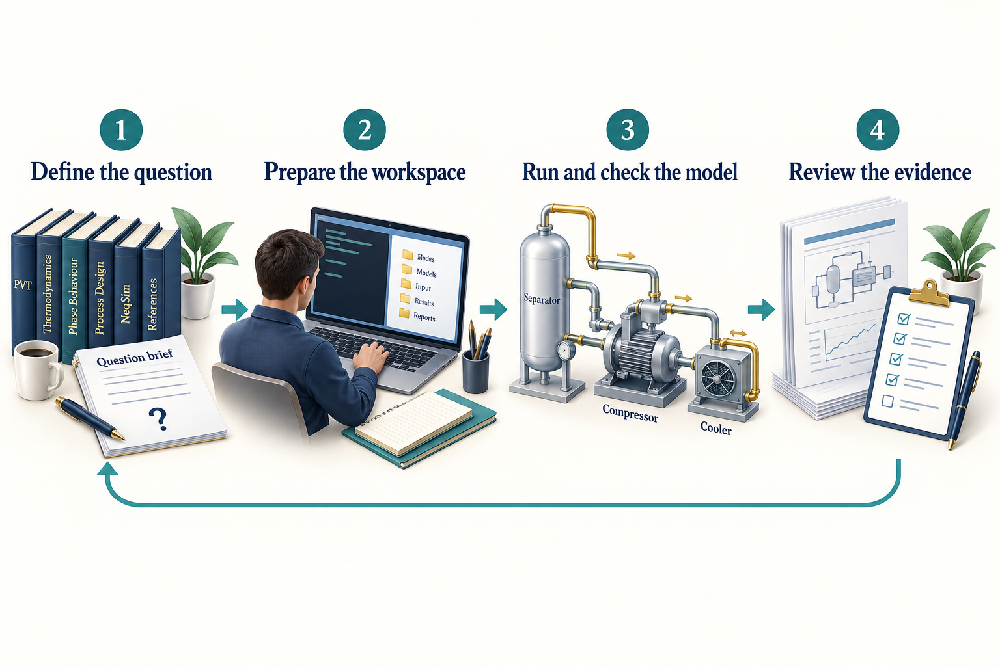
Observation. Figure 1.1 connects the chapter's main ideas. The return arrow connects review to a revised question. Keep the input basis, selected tools, executed calculation and review record together so an unexpected result can be investigated.
Data connect the whole loop: component amounts, operating conditions, reference documents and acceptance criteria. An agent can organise those inputs and write code, while NeqSim calculates the prediction. The prediction is conditional on the input data, physical model and numerical solution. Neither a tool call nor a confident explanation makes it exact in the physical world.
1.5 Give your first study a home
Three settings answer three different questions:
| Setting | Meaning | Inspection command after $PythonExe $NeqSimCli |
|---|---|---|
| Task root | Parent folder in which new studies are created | --show-task-root |
| Document root | Source library searched recursively for input files | --show-document-root |
| Report template | Word .docx or .dotx used for report styling |
--show-report-template |
Inspect them before creating work:
& $PythonExe $NeqSimCli --show-task-root
& $PythonExe $NeqSimCli --show-document-root
& $PythonExe $NeqSimCli --show-report-template
An unset document root means no source library is configured. An unset report template means the generator can use built-in styling; an organisation may require you to supply its template. A configured but missing folder or template is an error to resolve, not an instruction to silently substitute another source.
Create a small property-study folder:
& $PythonExe $NeqSimCli new-task 'Methane density check' --type A --scale quick --report-depth brief
Expect a Created: line with the absolute task path, followed by paths for study_config.yaml, user_input.md and the references input folder. Copy the returned path into the variable below, replacing the example:
$TaskDir = 'C:\path\printed\by\new-task'
$env:NEQSIM_TASK_DIR = $TaskDir
Get-Content -LiteralPath (Join-Path $TaskDir 'README.md')
The task folder holds this study's inputs, code, results and evidence. NEQSIM_TASK_DIR identifies that one folder; NEQSIM_PROJECT_ROOT still identifies the source checkout. Chapter 7 shows how to configure the three settings, search source documents, and prepare a report-backed study.
1.6 Ask an agent to do one checkable job
Open the NeqSim source folder in your AI host and confirm that it can read the workspace and use the selected execution environment.
For a VS Code session, open the source folder, enable the Python support used by your project, then run Python: Select Interpreter from the Command Palette and choose the same executable stored in $PythonExe. When opening a notebook, check its selected kernel as well. Open the agent chat with access to this workspace before sending the engineering request. The Python environment guide and agent overview describe the current host controls; these controls are separate from NeqSim's command-line tools.
Inspect the available catalogs from the terminal:
& $PythonExe $NeqSimCli agent list
& $PythonExe $NeqSimCli skill list
These commands list discoverable packages; they do not start agents. Workspace roles are also maintained under .github/agents. For this first problem, the thermodynamic-fluid role is defined in .github/agents/thermo.fluid.agent.md. The host may display the role's descriptive name rather than its filename. Select the role through that host's discovery mechanism, or explicitly ask the host to read and apply the definition. Chapter 5 explains installation and export in detail.
Agent prompt — paste into the host's chat, filling in the actual paths:
Use the NeqSim thermodynamic-fluid role for a quick property calculation. Continue in the task folder I have already created: [absolute task path]. Use the selected Python executable [absolute executable path] and source checkout [absolute source path]. Read README.md and study_config.yaml, then preserve this request in user_input.md. Calculate methane density at 298.15 K and 50 bara with SRK and the classic mixing rule. Run the code, initialise properties, report kg/m3, and state how the answer was checked. Keep model predictions separate from independent reference values. Save the calculation and results in this task; a brief answer is sufficient.
The important part is the accepted basis and the recorded execution. The expected response includes the value, model, units, executed artifact and checks. If a reference has not been retrieved, the agent should say that independent validation remains open. It should also reuse the existing task rather than create a second folder for the same request.
For a study that needs several steps, use the coordinating role in .github/agents/solve.task.agent.md, displayed as solve engineering task in its current definition. Section 7.5 gives a start/resume prompt and explains which settings control the AI host, the role, the study and the calculation runner. Installing a role makes its instructions available; you still start the work through the host. Section 5.8 explains how a company builds enterprise agents and skills on the public NeqSim layer, and Section 5.10 gives the working procedure for GitHub Copilot, ChatGPT Work and Claude Code.
1.7 Inspect the calculation yourself
Save the following cells in a notebook in the task's step2_analysis area and select the same Python interpreter as its kernel. Notebook execution requires a compatible kernel in that environment. You can also place both cells, in order, in a Python script; the command below shows how to run it. The first cell loads the chosen source checkout:
import os
import sys
from pathlib import Path
project_root = Path(os.environ["NEQSIM_PROJECT_ROOT"]).resolve()
sys.path.insert(0, str(project_root / "devtools"))
from neqsim_dev_setup import neqsim_init
neqsim_init(project_root=project_root, recompile=False)
import jpype
jneqsim = jpype.JPackage("neqsim")
The Java virtual machine, or JVM, loads the source build through the developer setup. A Java archive, or JAR, is a packaged library; accidentally loading an older installed JAR can hide changes in the source you intended to use. Restart the Python process after replacing loaded Java classes.
The second cell defines methane and performs a temperature-pressure flash:
fluid = jneqsim.thermo.system.SystemSrkEos(298.15, 50.0)
fluid.addComponent("methane", 1.0)
fluid.setMixingRule("classic")
ops = jneqsim.thermodynamicoperations.ThermodynamicOperations(fluid)
ops.TPflash()
fluid.initProperties()
density = fluid.getDensity("kg/m3")
assert density > 0.0
print({"density_kg_m3": float(density)})
Run both notebook cells in order. If you saved them together as step2_analysis/methane_density.py, run the script from the terminal:
$Calculation = Join-Path $TaskDir 'step2_analysis\methane_density.py'
& $PythonExe $Calculation
The constructor takes kelvin and bar absolute. SRK means the Soave–Redlich–Kwong equation of state. The single component keeps the basis easy to audit. initProperties() prepares the requested thermodynamic and physical properties after the flash. The printed dictionary should contain a positive density in kg/m3; the assertion checks only that basic numerical condition. Chapter 9 adds a matched comparison with independent reference data.
1.8 Carry a simple gas case through the book
The later process examples use this synthetic dry-gas basis:
| Input | Teaching value |
|---|---|
| Methane / ethane / propane | 0.85 / 0.10 / 0.05 mole fraction |
| Feed temperature | 303.15 K, or 30 degrees C |
| Feed pressure | 60 bara |
| Mass flow | 10,000 kg/h |
| Compression target | 120 bara |
| Assumed polytropic efficiency | 0.75 |
| Aftercooler target | 308.15 K, or 35 degrees C |
This short composition supports fluid construction, phase checking, compression and sensitivity analysis. It contains no water. Chapter 11 declares a separate wet variant before introducing hydrate equilibrium.
Mass flow avoids an unstated standard-volume convention. If you later convert to a standard volumetric flow, record its reference temperature, reference pressure and dry or wet basis. Similar abbreviations can describe very different quantities.
1.9 Find the next useful step
| If you see this | Investigate this first |
|---|---|
neqsim is not recognised |
Use the explicit Python-and-CLI form; inspect the selected environment's launcher path |
| A class or method is missing | Compare the loaded Java source with the intended commit |
| A property is zero or unavailable | Check phase existence and initProperties() |
| A result differs by a large factor | Check units, pressure basis and flow reference conditions |
| A role or skill is absent in the host | Check its canonical source, installation and host export |
| A configured path cannot be read | Correct that setting or access issue; retain the intended study basis |
You now have a way to identify the runtime, create a study, direct an agent and inspect the calculation. Chapter 3 develops the physics, Chapters 4–6 explain the agent and skill system, and Chapter 7 turns the same loop into a portable engineering study with documents and reports.
1.10 How was the task solved, and how was it checked?
For the methane task, the agent turns the request into a recorded basis: methane, 298.15 K, 50 bara, SRK and density in kg/m3. It reads the relevant instructions, prepares the calculation, runs it with the selected source build and inspects the output. NeqSim performs the flash and property calculation. The agent connects that execution to an explanation and saves the evidence in the task folder.
Check the answer at three levels. First, inspect the saved code and run record: did this calculation actually run with the intended inputs and software? Second, inspect its numerical and physical checks: the positive-density assertion catches only a narrow class of failures. Third, compare with independent evidence at the same state before making an accuracy claim. Chapter 9 supplies a reference comparison; Chapter 7 explains the complete review process.
A useful answer states the result and units, the model and assumptions, the executed file, the checks performed, and any unresolved limitation. Ask which check supports each conclusion. A result can be reproducible while its accuracy for the intended application remains unestablished.
Exercises
- Run the help and diagnostic commands with your selected interpreter. Record the source revision and explain any unresolved check.
- Identify your task root, document root and report template. Explain which may be unset for the methane example.
- Rewrite the agent prompt for a two-component gas, including composition basis and requested units.
- Explain why a successful flash and positive density do not establish independent validation.
- Describe the additional input needed before the dry-gas case could support a hydrate study.
- Trace the methane answer from the original request to its saved calculation and checks. Identify the evidence still needed to claim accuracy.
Further Reading
Use the NeqSim learning paths, the skills and agents guide, and the selected checkout's devtools/neqsim_cli.py --help. The local source and reproducibility appendix establish which commands and APIs this edition actually checked. [3]
What Agentic Engineering Changes
Learning Objectives
You should be able to distinguish automated calculation from agentic problem solving, explain where an agent can help an engineering study, and identify the evidence needed before using its output.
2.1 Engineering work is a chain of decisions
Consider a compressor study. The engineer must establish the feed composition, determine which operating cases matter, choose a thermodynamic model, specify efficiencies and losses, calculate performance, check constraints, and explain the recommendation. The numerical solve is one link in this chain. Transcription, inconsistent assumptions, missing evidence, and changes to the design basis can create errors elsewhere.
An agent can help connect these activities. It can read the design basis, propose a work plan, identify missing data, construct the model, execute calculations, and prepare a report. The useful outcome is a clearer and more repeatable engineering process. Faster text generation alone is a poor measure of value.
In this book, agentic engineering means engineering work in which a tool-using AI system can select and revise parts of the workflow in response to observations. The amount of discretion varies. A fixed script that executes a predefined pressure sweep is automation. An agent that notices a failed phase calculation and investigates the model basis exercises additional discretion. Both can belong in the same study. [4, 5]
2.2 Separate prediction from evidence
A language model can produce convincing explanations and plausible numbers without performing a calculation. Requiring a tool call addresses one failure mode: the result can be connected to an actual execution. It does not eliminate an incorrect composition, inappropriate equation of state, or invalid equipment model.
There are several distinct claims to assess:
| Claim | Evidence required |
|---|---|
| The calculation executed | Run status and output files |
| The implementation behaves as intended | Focused tests and regression comparisons |
| The result is physically plausible | Balances, limits, trends and domain checks |
| The model represents the application | Independent data over the relevant range |
| The recommendation meets the study basis | Traceable acceptance criteria and review |
These claims build on one another, but none is a substitute for the next. Repeating the same flawed model with two agents does not create independent validation.
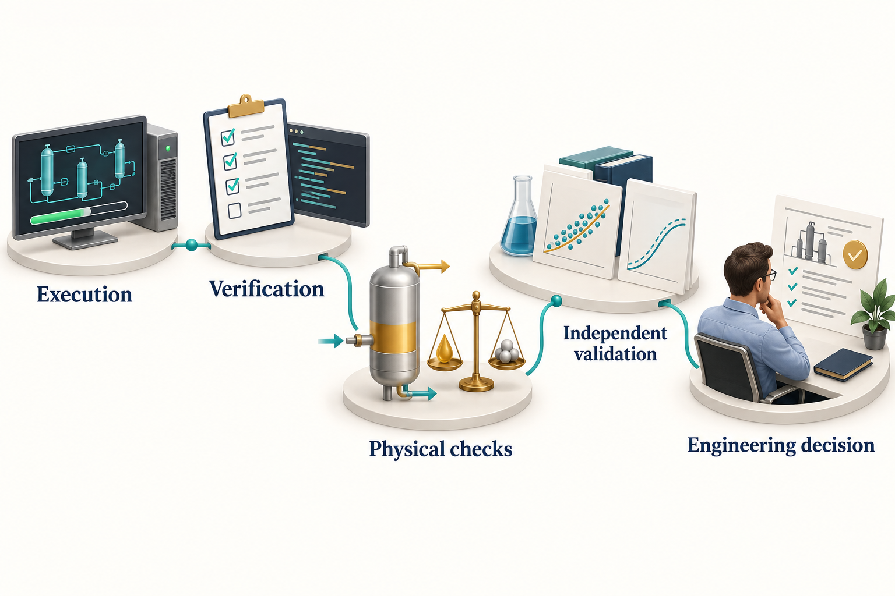
Observation. Figure 2.1 connects the chapter's main ideas. Each area answers a different question. A completed computation does not establish agreement with independent data, and a reference comparison does not by itself establish that the result answers the intended engineering question.
2.3 Where agents can add practical value
Agents are useful when a task requires many small, connected operations whose details vary between studies. They can translate an engineering request into explicit inputs, find a relevant example, prepare repetitive code, inspect errors, and keep result tables consistent with their source files. A well-designed skill can make lessons from one study available to the next.
For the running gas case, an agent might discover that compression requires a single gas-phase inlet and therefore introduce an inlet separator. It might then calculate the compressor duty over a pressure range and notice liquid formation after cooling. Those observations should lead to explicit model changes and an updated report, not silent edits to the original assumptions.
A useful evaluation asks whether the agent reduces total engineering effort while preserving quality. Measure time to a reviewed result, the amount of rework, the number of unsupported claims, and the reproducibility of the final calculation. Report the task set and review procedure with any productivity result. This edition does not assign a general percentage saving to agentic engineering.
2.4 Where discretion should be limited
An agent needs more freedom when investigating incomplete information than when executing an approved calculation template. These activities should have different controls.
During exploration, it may propose alternative EOS models or operating cases. During a controlled re-run, it should preserve the selected model and inputs unless a change is explicitly part of the task. During reporting, it should read authoritative results rather than recomputing rounded values from prose. During plant integration, access to a historian does not imply authority to change a control-system setting.
The useful question is specific: which decisions may this workflow make, using which tools and data, under which constraints? A label such as autonomous does not answer it.
2.5 Why NeqSim is a suitable numerical layer
NeqSim exposes fluid and process models through code. An agent can create a fluid, configure equipment, run a calculation, and inspect outputs without navigating a graphical simulator. The source and tests can be examined when an interface or result is uncertain. This makes it possible to connect a reported output to an implementation and its checks. [3]
Open source also makes limitations visible. A component database may lack a required species; a correlation may apply only to a restricted flow regime; a source-level feature may need a newer checkout. Visibility helps the reviewer, but it does not remove the need for application-specific validation.
The library spans thermodynamic property calculations, phase equilibrium, process equipment, PVT experiments, and related engineering functions. Chapters 3 and 10 distinguish the simulation layer from mechanical design and information exchange. The breadth of the API should not be interpreted as uniform validation coverage across every application.
2.6 A better definition of completion
A useful study ends when its decision can be reviewed against its basis. For the synthetic compressor example, completion includes the feed specification, model choices, calculated operating states, duty, checks on mass and energy, identified constraints, and limitations. If a vendor map is absent, the report should not claim that the machine has an acceptable operating margin.
An attractive report can still be incomplete. Conversely, a study that concludes that more data are required can be successful if it identifies the missing evidence and explains why it matters. This is particularly valuable when uncertain composition or operating conditions dominate a result.
The same principle applies to software work. A discovered API error should lead to a corrected example, a focused check, and an update to the relevant skill. The reusable improvement belongs in the repository that owns it; confidential project inputs remain with the study.
2.7 Reading results critically
When reviewing agent-generated work, begin with the engineering question. Confirm that the calculations answer that question and use the same basis. Then inspect the inputs and the evidence behind consequential outputs.
For example, a reduction in compressor power may result from a lower mass flow after condensation. It is not automatically an efficiency improvement. A lower predicted pipeline pressure drop may come from a changed diameter or a different flow model. It is not automatically a better route. A smooth figure can conceal failed cases that were dropped from the dataset.
Ask for failed cases, excluded data, and changed assumptions alongside successful outputs. The agent should make these easy to inspect.
Exercises
- For a heat-exchanger study, identify one task suited to a fixed script and one that benefits from agent discretion.
- A report says that all checks passed. Write five more precise statements that could replace that sentence.
- Design a small comparison between manual and agent-assisted engineering. Specify the task set, review criteria, and measures of total effort.
- Explain how an agent could lower reported compressor duty without improving the physical process.
The NeqSim Physics Engine
Learning Objectives
You should be able to select an initial thermodynamic model, explain a flash calculation, distinguish thermodynamic and transport properties, build a small process model, and identify current interfaces that support agent workflows.
Before the equations, recall three ideas. A mole measures amount of substance; mole fraction describes a mixture by that amount. A phase is a physically distinct region, such as a gas, liquid or solid. Enthalpy combines internal energy and pressure–volume work and is useful for tracking energy carried by flowing material. Temperature and pressure specify a state only when composition and an appropriate model are also known. The examples use absolute pressure and state their flow and unit conventions.
3.1 What the engine calculates
NeqSim is an open-source library for thermodynamic properties, phase equilibrium, PVT experiments, and process simulation. A fluid object carries components, amounts, temperature, pressure, and model settings. Thermodynamic operations solve for equilibrium states. Equipment objects apply physical relationships and operating specifications to connected streams. A ProcessSystem coordinates a flowsheet.
The source is organised around these responsibilities. The thermo packages contain fluid and phase models; thermodynamicoperations contains flash and related calculations; physicalproperties provides transport-property methods; process contains equipment, automation, design and lifecycle functions; and pvtsimulation contains laboratory-experiment models and supporting workflows. [3]
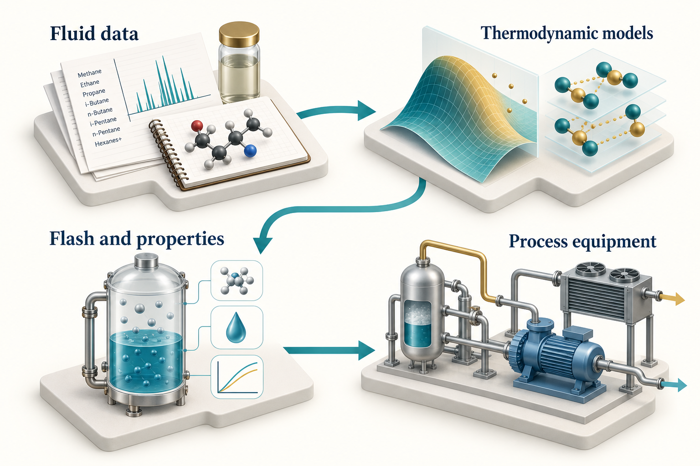
Observation. Figure 3.1 connects the chapter's main ideas. The connected areas share a model basis. Incorrect composition or an unsuitable thermodynamic model can affect every downstream equipment result. The molecular and equipment forms are symbolic, not chemical structures or a process design.
3.2 Cubic equations of state
Cubic equations of state provide a practical balance between computational cost and coverage for many hydrocarbon applications. The Soave-Redlich-Kwong equation is
Here, $P$ is pressure, $T$ is absolute temperature, $v$ is molar volume, $R$ is the gas constant, $b$ represents the co-volume parameter, and $a(T)$ represents attractive interactions. Use coherent units when evaluating the equation directly. NeqSim handles its own internal unit conventions; the public constructor used in the examples accepts kelvin and bar. [6]
The Peng-Robinson equation changes the attractive term:
Both models need pure-component parameters and mixing rules for mixtures. Binary interaction parameters, heavy-end characterisation, and volume corrections can materially affect the result. Choosing SRK or PR is only part of specifying the thermodynamic model. [7]
For mixtures, the model must predict component fugacities in each phase. Phase equilibrium requires equality of each component's fugacity across the phases present. Matching pressure and temperature alone is insufficient.
3.3 Model selection depends on the question
| Application | Candidate starting point | Evidence to check |
|---|---|---|
| Hydrocarbon gas and process screening | SRK or PR | Phase behaviour and properties over the operating range |
| Water, alcohol or glycol interactions | An appropriate CPA implementation | Association model and mixture parameters |
| Natural-gas property work | GERG-family implementation where applicable | Supported components, phase treatment and range |
| CO2-rich mixture property work | EOS-CG implementation where applicable | Supported mixture, model selection and independent reference states |
| Petroleum PVT | Characterised EOS fluid | Laboratory data, plus fraction and validation cases |
| Electrolytes or specialised fluids | A model designed for that chemistry | Species coverage and application-specific validation |
CPA adds an association contribution to a cubic model and is useful when hydrogen bonding matters. GERG-2008 is a multi-parameter mixture model developed for natural-gas-related property calculations. Neither should be described as universally best. The selected implementation, component coverage, phase regime and available validation data matter. [8, 9]
Compare model predictions when that comparison informs sensitivity to model choice. Agreement between SRK and PR is not independent validation: they share modelling assumptions and may agree while both differ from measurements.
The current source also documents hydrogen- and ammonia-oriented GERG model-selection paths and the EOS-CG family. Select these through the API described for the chosen class and record the actual model name with the result. Do not infer the selected formulation from the composition alone. The current GERG and EOS-CG guide gives executable examples and states that the current SystemGERG2008Eos and SystemEOSCGEos classes do not advertise analytical fugacity derivatives with respect to composition, pressure or temperature. Positive finite outputs demonstrate execution and model selection; they do not establish custody-transfer accuracy or reproduction of a published validity range. These options broaden the model-selection discussion; the numerical comparison in Chapter 9 remains the explicitly tested SRK/PR methane case.
3.4 What a flash calculation solves
A temperature-pressure flash determines the equilibrium phase state for a supplied overall composition at specified $T$ and $P$. A pressure-enthalpy flash finds a state consistent with pressure and enthalpy, which is relevant to throttling and energy balances. Dew-point and bubble-point calculations locate the appearance of an infinitesimal phase under their particular specifications.
For a two-phase split, component material balances connect the overall mole fractions $z_i$ to liquid and vapour compositions. With vapour fraction $\beta$ and equilibrium ratios $K_i$, the Rachford-Rice relation is
The equation is part of the phase-split problem; the equilibrium ratios depend on thermodynamic properties and must be consistent with the equilibrium state. Stability analysis helps determine whether a proposed phase state is stable. These are numerical tasks for the engine, not quantities to infer from persuasive prose. [10, 11, 12]
3.5 Initialise the properties you intend to read
After a flash, call fluid.initProperties() before reading density and transport properties in the book's examples. An init(3) call alone does not initialise all physical-property models.
ops.TPflash()
fluid.initProperties()
number_of_phases = fluid.getNumberOfPhases()
for phase_index in range(number_of_phases):
phase = fluid.getPhase(phase_index)
print(str(phase.getPhaseTypeName()))
Inspect phase presence before a gas-only or liquid-only query. A fluid can cross a phase boundary when temperature, pressure or composition changes. Code that always assumes phase zero is gas can return the wrong physical quantity without an obvious exception.
A system-level density and a phase density answer different questions in a multiphase system. State which one is required. The same care applies to heat capacity, enthalpy, and viscosity. Include the output unit in every table and use unit-aware accessors when available.
3.6 From fluids to equipment
A Stream combines a fluid with a flow rate. A separator creates outlet streams based on its phase separation model. A compressor calculates a pressure increase under the selected efficiency or performance model. A cooler imposes a thermal specification. Connecting these objects forms a process model.
The following construction fragment continues from an existing fluid:
Stream = jneqsim.process.equipment.stream.Stream
Separator = jneqsim.process.equipment.separator.Separator
ProcessSystem = jneqsim.process.processmodel.ProcessSystem
feed = Stream("Feed", fluid)
feed.setFlowRate(10000.0, "kg/hr")
separator = Separator("Inlet separator", feed)
process = ProcessSystem()
process.add(feed)
process.add(separator)
process.run()
The outlet references connect the calculations. Add equipment in a suitable calculation order and handle recycles explicitly. A process with recycles requires convergence criteria and a documented strategy; one pass through a list of units is not necessarily a converged flowsheet.
Chapter 10 extends this model and checks the resulting mass balance. Process separation and detailed separator performance are different levels of representation. Entrainment, internals, pressure loss, and dynamic behaviour require additional models and inputs.
3.7 Current interfaces that matter to agents
The September 2026 source includes several interfaces that make engineering workflows easier to inspect and maintain. These are source-snapshot capabilities; use the recorded commit and current tests when reproducing them.
Process automation. ProcessAutomation provides string-addressable variables, units, input/output descriptors, and diagnostics. An agent can discover the variables of a named unit before reading or changing them. After a change, re-run the process to propagate it.
auto = process.getAutomation()
unit_names = list(auto.getUnitList())
variables = list(auto.getVariableList("Inlet separator"))
Safe accessors return diagnostic information rather than simply throwing an exception. Their name does not mean that a change is approved or physically suitable. Inspect the reported operation, corrections, bounds, and result.
Lifecycle state. ProcessSystemState and ProcessModelState support saved state and revision comparison. A saved state helps a reviewer identify what changed between cases. It does not automatically package every external dataset, runtime dependency, or approval; preserve those alongside it.
Connectivity and identity. ProcessConnection, stream introspection, and reference designations help identify equipment and its relationships. Stable tags matter because an agent must distinguish a variable on one compressor from a similarly named variable elsewhere in a multi-area model.
Energy networks. EnergyNetworkSolver, typed utility buses, converters and shaft-related models support explicit energy relationships. These complement material streams and make utility allocation and conversion losses visible. Check which steady-state or transient assumptions apply to the chosen equipment.
Route-based hydraulics. PipingRouteBuilder can turn structured route information into serial pipe models. Route interpretation, hydraulic calculation, and acceptance of drawing-derived geometry remain separate steps. A route assembled from incomplete data needs an explicit gap record.
Engineering information. DEXPI readers and writers, the canonical engineering graph, and EngineeringDeliverableCompiler connect simulation objects to exchange files, cases, registers, and evidence. A generated exchange is a representation of selected model information; it is not automatically a qualified import into a recipient's engineering system.
The DEXPI engineering guide distinguishes Proteus-compatible exchange, native DEXPI 2.0 Plant models, and native DEXPI 2.0 Process models. It also separates internal schema/profile checks from named-tool qualification and discipline acceptance. [13]
3.8 PVT characterisation and validation
A petroleum fluid is often more complex than a list of pure components. Laboratory composition, plus-fraction properties, characterisation choices, and experiment conditions influence the model. NeqSim supports experiment models such as constant mass expansion, constant volume depletion, differential liberation and separator tests.
The current PVT workflow emphasises calibration and validation as separate activities. Calibration adjusts selected model parameters against training data. Validation examines retained data or conditions not used for fitting. A small residual on the fitted dataset does not establish predictive accuracy elsewhere.
Retain the original fluid, calibrated fluid, objective function, parameter bounds, experiment basis and validation cases. Inspect whether improved agreement for one property damages another. A fluid calibrated for saturation pressure may still predict liquid density or viscosity poorly. The current PVT documentation is the starting point for experiment-specific examples. [14]
3.9 Read capability claims with their limits
A class in the source establishes that an implementation exists. A test establishes the behaviour it exercises. A benchmark establishes agreement under its stated conditions. None establishes universal suitability.
This distinction is especially important for mechanical design, safety, corrosion, transient events and cost estimation. Use NeqSim to organise and calculate the supported parts of a study, then qualify the result against the applicable application data and review process.
Exercises
- Explain why a mixing rule and interaction parameters belong in the model basis.
- Compare a TP flash and a PH flash using an engineering example for each.
- Identify the difference between checking a method's existence and validating its physical predictions.
- Describe what must accompany a saved process state for another team to reproduce a study.
- Propose calibration and validation datasets for a petroleum-fluid model.
How Agents Use Skills and Tools
Learning Objectives
You should be able to trace a request through an agent, distinguish instructions from executable tools, design a useful handoff, and explain why persistent artifacts and external controls matter.
4.1 From a request to an observable action
A tool-using agent receives a request together with instructions, selected context, and descriptions of available tools. It may answer directly, retrieve more information, or ask the host to execute an operation. The host returns observations such as a file, a numerical result, or an error. The agent uses those observations to choose what happens next.
This request-action-observation cycle is often associated with ReAct-style systems. The reader should focus on the observable workflow: which inputs were used, which tools ran, what they returned, and why the next engineering action was justified. A useful audit record does not depend on access to a model's private internal reasoning. [4]
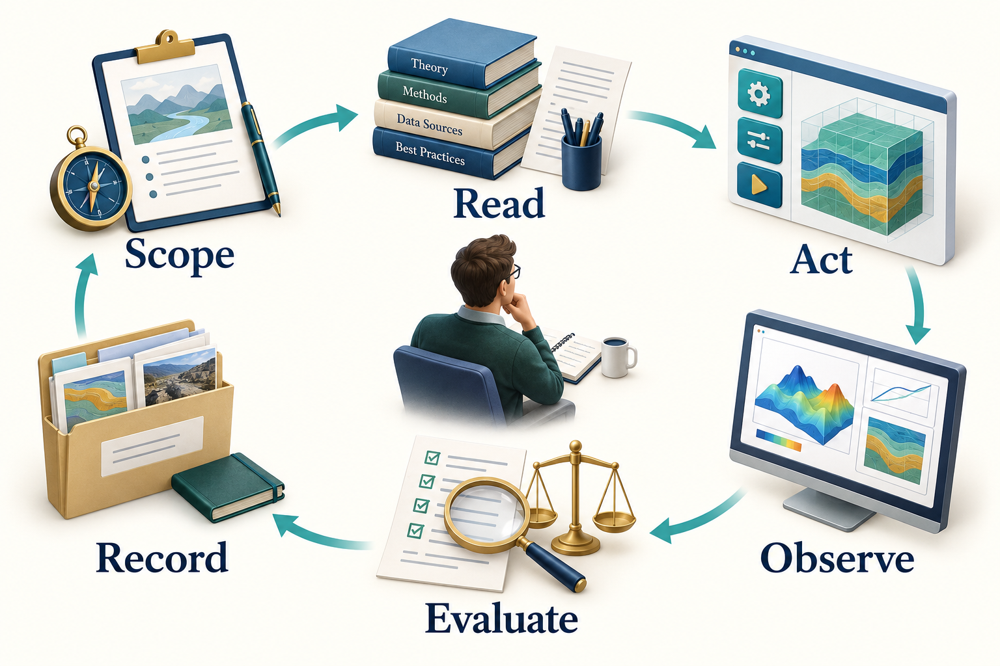
Observation. Figure 4.1 connects the chapter's main ideas. The return path makes investigation explicit. A result is inspected before another action is selected; the evidence folder preserves the context needed when a different agent or a later session resumes the work.
4.2 Five objects that are easy to confuse
| Object | What it contains | What it does not establish |
|---|---|---|
| Agent definition | Role, scope, workflow and expected skills | A running process by itself |
| Skill package | Reusable instructions, references and optional code | Guaranteed correctness |
| Tool description | Callable operation and input/output contract | Permission to use every operation |
| Runtime or harness | Execution, state, access and supervision | Engineering validity of results |
| Evidence artifact | Inputs, outputs, checks and provenance | Approval unless explicitly reviewed |
The separation is useful when something fails. A missing method may require a code or version fix. A repeated unit mistake may require a skill improvement. An unauthorized operation requires an access-control fix. Adding more text to an agent definition will not reliably solve all three.
4.3 Write tools around engineering meaning
Good tools accept explicit quantities and return structured results. A pressure should include its unit and basis. A composition should identify its component names and whether amounts are mole fractions, mass fractions, or flow rates. A result should distinguish success, warning, and failure.
NeqSim can be called directly through Java or Python, through the string-addressable ProcessAutomation facade, or through MCP tools. Direct code offers flexibility. A narrow tool can constrain a repeated operation and make validation easier. Neither route is inherently correct for every task.
The automation facade is particularly useful once a flowsheet exists. The agent can discover variables on a named unit, inspect whether they are inputs or outputs, and read or change values with units. It should discover names before writing values. A diagnostic suggestion for a misspelled tag is useful evidence, but accepting a suggested tag is still a model change that should be recorded.
4.4 Context is a working set
A large repository cannot usefully be loaded into every model request. The host and agent need a working set containing the current objective, relevant instructions, selected skills, a concise design basis, and the latest observations.
Skills help by making detailed knowledge available when needed. Load the relevant API pattern and domain method, then retain the inputs, assumptions, and result files on disk. Repeatedly pasting a complete manual into the conversation makes it harder to identify what matters. Context engineering concerns the selection and maintenance of that working set, including retrieval, compact summaries, and durable state. [15]
Host conventions differ. A directory that one editor discovers automatically may be invisible to another. A generic NeqSim export is a portable package; the selected host still needs a documented way to load it. For example, Codex distinguishes project guidance in AGENTS.md from reusable skills in SKILL.md. A community package's AGENT.md is its workflow definition; it is not automatically project guidance just because the names look similar. Chapter 5 shows how to keep these layers separate. [16]
When a host supports skill discovery, it can first read a skill's name and description, then load its detailed instructions when the task calls for them. The agent still needs the referenced files and callable tools. A skill that names an OCR engine or NeqSim runner does not make that dependency available merely by being read. [17]
4.5 Persist decisions and artifacts
A conversation is a poor sole record for a long engineering study. Save the accepted basis, the model revision, results, and open issues as files. A checkpoint should say what is complete, what evidence supports it, what changed, and what remains unresolved.
A concise handoff might contain:
study: teaching_compressor_case
basis_revision: basis_01
fluid_basis: mole_fraction
feed_pressure: {value: 60.0, unit: bara}
feed_temperature: {value: 303.15, unit: K}
feed_mass_flow: {value: 10000.0, unit: kg/hr}
model: SRK
mixing_rule: classic
completed: [base_case]
next_action: check_discharge_pressure_sensitivity
open_issues: [vendor_map_not_supplied]
This is an illustrative handoff contract, not a NeqSim runner schema. Real tool requests must follow the schema advertised by the selected tool. The distinction prevents an attractive example from being mistaken for an executable API payload.
Add resolved file locations to a real handoff. The task parent is where new studies are created; the active task directory is one particular study. The source checkout supplies the selected NeqSim implementation. An optional document root supplies a searchable reference library. They serve different purposes and may be on different drives. Pass the absolute active task path and selected interpreter to every specialist, along with the document root and report template when configured. Changing a default parent does not relocate an existing study. [18]
Before interpreting a request to “use the usual documents,” resolve that library and record which files actually supported the calculation. A new document-root setting changes where the workflow can look. It does not approve a document revision, resolve a contradictory datasheet, or provide an asset-specific design basis.
4.6 Put repeated numerical work in code
An agent can prepare a Monte Carlo study, but a language-model call is usually unnecessary inside each numerical iteration. Generate and review the simulation function once, sample the uncertain inputs in code, run NeqSim for each technical case, and collect failures explicitly. Return the dataset to the agent for interpretation after execution.
Use separate process instances or isolated workers when parallelising mutable simulation objects. Do not assume that two agents can safely mutate the same flowsheet. Parallel execution is useful only when the work and outputs can be separated clearly.
4.7 Recover without hiding changes
A failed calculation is an observation. First identify whether the problem is an input error, missing component, incompatible method, numerical difficulty, or unavailable dependency. A retry should have a stated reason and a bounded policy.
Changing EOS, clipping an input, deleting a component, or loosening a tolerance can change the engineering question. Preserve the original request and record the revised basis. If an accepted method cannot solve a case, retain that case as a failure in the results. Do not drop it merely to make a plot continuous.
Instructions alone cannot enforce these rules. The runtime should control filesystem scope, credentials, tool permissions, execution limits, and the handling of side effects. Retrieved documents are evidence to interpret; they do not gain authority to override the study instructions.
4.8 What to evaluate
Evaluate the complete workflow on representative tasks. Include correct inputs, incomplete inputs, wrong units, missing phases, solver failures, and conflicting requirements. Measure whether the agent chooses suitable tools, preserves the basis, reports limitations, and produces repeatable artifacts.
A useful failure example is a compressor request using gauge pressure where the tool expects absolute pressure. A system that asks for the missing basis or rejects the ambiguous input behaves better than one that returns a plausible number quickly. The evaluation should reward the engineering behaviour you want to deploy.
Exercises
- Trace the observable actions for the methane-density request from Chapter 1. Identify the input and output of each tool call.
- Design a handoff from fluid preparation to process simulation. Include units, composition basis, model revision and open issues.
- A tool suggests a similar equipment tag after a failed lookup. Explain what must be checked before accepting it.
- Propose three deliberately difficult inputs for an agent evaluation and describe the expected behaviour.
Part II: The Agentic Platform
Agents and Repositories
Learning Objectives
You should be able to locate the main NeqSim agent and skill sources, distinguish canonical packages from discovery exports, select a workflow from a catalog, define a reproducible handoff between specialists, and plan a company's enterprise agent library.
5.1 An ecosystem rather than one folder
The NeqSim numerical library, public engineering workflows, company procedures, and publishing tools have different owners and release cycles. Keeping them in separate repositories allows a thermodynamic API change, a public screening method, and a company approval procedure to be reviewed by the people responsible for each.
The main public entry points are equinor/neqsim, equinor/neqsim-community-agents, and equinor/neqsim-community-skills. The core repository's community-agents.yaml points to the public agent repository and its catalog. The catalog in the community repository contains the package entries themselves. Company-private content belongs in private catalogs and repositories. [3, 19, 20]
This chapter describes the source inspected on 13 September 2026: NeqSim commit 9a95440e194a and community-agents commit 0ca1428a5dbd. These revisions make the examples identifiable without assuming that a later catalog has the same contents. A catalog header or README count can lag behind the packages; inspect the actual entry and manifest when selecting work.
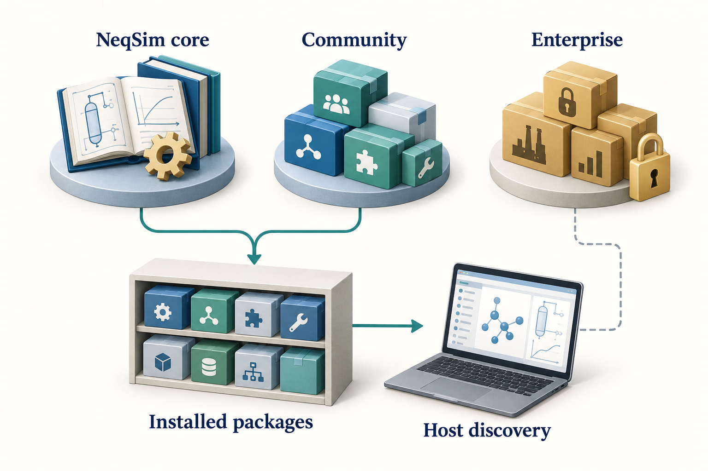
Observation. Figure 5.1 connects the chapter's main ideas. Public reusable methods and private organisational content have different owners. The picture is an ownership and discovery overview; the paths and commands in the text define the actual installation and export mechanisms.
5.2 Where each kind of content belongs
| Location | Main responsibility |
|---|---|
NeqSim src/main/java and src/test/java |
Numerical implementation and tests |
NeqSim .github/agents |
Workspace agent definitions |
NeqSim .github/skills |
Workspace-visible core skills |
| Community agents repository | Public workflow packages and their dependencies |
| Community skills repository | Public reusable engineering methods |
| Private enterprise repositories | Company methods, policy overlays and integrations |
PaperLab agents and skills |
Canonical publishing roles and knowledge packages |
The community agent repository uses a readable package structure:
community-agents.yaml
agents/
tie-in-screening-agent/
AGENT.md
agent.yaml
README.md
examples/
prompts/
tests/
The catalog supports discovery, agent.yaml describes the package contract, and AGENT.md gives the engineering workflow. Supporting examples and tests help a contributor demonstrate intended behaviour. Their presence should prompt inspection of what was tested; it does not establish independent validation of every application. [19]
A public skill should be useful without confidential plant information. It can describe a hydrate-margin calculation and its inputs. An enterprise overlay can specify the approved margin policy for a company or study class. Asset-specific tag mappings, documents, credentials, and operational values belong in the authorised private environment.
The core should not require a private package to perform a public calculation. Enterprise workflows can depend on approved public skills and add company requirements. This dependency direction makes the public system usable and keeps private rules from leaking into community content.
5.3 Canonical source, installation and export
Three locations may contain similar-looking files for different reasons.
The canonical source is the maintained repository package. A canonical installation is the user's installed copy, normally under ~/.neqsim/agents or ~/.neqsim/skills. An export makes selected content available to a particular host. Current NeqSim VS Code exports use the personal ~/.copilot/agents and ~/.copilot/skills locations by default; explicit workspace exports use .github/agents and .github/skills. Tool-neutral exports are placed under ~/.neqsim/export/generic, with agent folders and a manifest that records their main files and metadata. [21]
Do not edit a generated export as the only copy of an improvement. A later export can replace it. Make the change in the owning source package, validate it there, then refresh the installation or export. If a local experiment is intentionally private, keep its source in a controlled private location and record which copy the host loaded.
PaperLab follows the same principle. Its complete internal library remains under neqsim-paperlab/agents and neqsim-paperlab/skills. The normal VS Code installation exports the @paperlab gateway and its declared public skills. --include-internal is an option for users who need direct specialist definitions. neqsim paperlab install --vscode --dry-run previews the export. A small editor catalog does not mean the internal library has disappeared. [22]
5.4 Discover agents by purpose
Agent names are an index into workflows. They are not evidence of capability by themselves. Inspect the definition, required skills, supported domains, expected outputs, and review requirements.
Examples in the current core workspace include thermo.fluid, process.model, pvt.simulation, flow.assurance, mechanical.design, plant.data, solve.task, and review. Public community packages include workflows such as hydrate-screening-agent, process-screening-agent, and tie-in-screening-agent. These naming conventions belong to different catalogs; a core filename and a community install identifier need not match.
Use discovery commands before installing:
neqsim agent list
neqsim agent search "hydrate screening"
neqsim agent info hydrate-screening-agent
neqsim skill list
neqsim skill info neqsim-hydrate-screening
For a source workspace, semantic discovery is also available. Its search covers configured local roots, including the core and available sibling community or enterprise repositories; it should not be mistaken for a search of every remote package on GitHub:
<python-executable> devtools/agent_search.py "gas compression study" --top 8
<python-executable> devtools/skill_search.py "gas compression study" --top 5
Search results are candidates. Confirm that the selected workflow accepts the available input and produces the required evidence. A screening agent may be entirely appropriate for an early decision and insufficient for detailed equipment qualification.
After inspection, a user can install and export a chosen package. These commands are configuration examples, not steps required to read this book:
neqsim agent install hydrate-screening-agent --target vscode --no-pip
neqsim agent installed
neqsim agent doctor --target vscode
Installation resolves missing required_skills by default. Here, --no-pip separates that content installation from Python package changes. The distinct --no-install-missing-skills flag disables automatic installation of missing skill content. Inspect unresolved dependencies before attempting the workflow. An existing installed package can be exported for another host with neqsim agent export hydrate-screening-agent --target generic. The currently supported export targets are vscode and generic. [21]
| Host | How the exported material is used |
|---|---|
| VS Code Copilot | Discover the personal or explicitly selected workspace export through the host's agent and skill interfaces; reload the window if newly exported definitions are not yet visible |
| Codex | Load the agent definition explicitly and make its required skills available through Codex's own skill mechanism; a NeqSim generic export does not itself register a Codex agent |
| Another agent host or harness | Point its documented loader or adapter at the generic package and provide the required tools, environment and permissions |
Codex currently discovers repository skills under .agents/skills and user skills under ~/.agents/skills; the CLI and IDE can select skills explicitly through /skills or a $ mention. Those are Codex conventions, separate from NeqSim's canonical install. Consult the current host documentation before copying or linking packages. [17]
For any host, an explicit request can identify the installed AGENT.md, the required SKILL.md files, the engineering objective and the active study path. The host then runs the workflow using its available tools. neqsim agent run <name> currently prints launch guidance and the installed definition's location; it does not execute an autonomous engineering study. [21]
5.5 Understand the agent package contract
Community catalogs can declare an agent's stable identifier, version, source path, required skills, supported domains, MCP dependencies, trust level, and human-review requirements. Check the catalog and package manifest together.
The following is an abbreviated excerpt from the inspected tie-in-screening-agent/agent.yaml, using its real dependency identifiers:
name: tie-in-screening-agent
version: "0.1.0"
agent_type: community-agent
required_skills:
- neqsim-fluid-quality-check
- neqsim-hydrate-screening
- neqsim-separator-modelling
- neqsim-resource-classification-screening
human_review_required: true
This agent combines fluid-quality, hydrate, separator and resource-classification screening around a proposed tie-in. Its outputs identify risks, data quality and recommended follow-up; the package does not turn a screening result into a detailed design approval. The manifest's review requirement remains part of the handoff. [23]
A matching dependency name is not enough if the installed version expects an API absent from the selected NeqSim core. Record source revisions and compatible package versions in the study manifest. Also distinguish required_skills, optional context_skills, and coordinated_agents: they express different relationships. An installer resolving required skill content does not prove that it has executed or validated a specialist composition.
5.6 Choose the simplest useful composition
A single agent with a small relevant skill set is often enough for a property calculation. Additional specialists are useful when they have separable responsibilities and clear outputs. Common compositions include a sequential chain, independent analyses that later join, and a model-review-repair loop.
For a compressor study, fluid preparation can precede process simulation. A reviewer can then examine balances and constraints using the resulting model and evidence. Independent alternatives may run in separate workers, provided they use the same accepted basis and write to separate output locations.
More agents introduce coordination cost. They can duplicate work, use inconsistent assumptions, or overwrite shared results. Two reviewers using the same reasoning and data also share failure modes. Allocate specialists to concrete subtasks and require structured handoffs rather than treating agent count as a quality measure. [24]
The public flow-assurance-study-agent provides a concrete coordinator example. Its inspected manifest has an empty required_skills list, optional benchmark and uncertainty context, and named specialists covering document intelligence, PVT, route screening, flow assurance, OLGA, cooldown, piping integrity and sand erosion. An empty hard dependency list means the coordinator delegates the domain work; it does not mean the study needs no engineering methods. The selected host or harness must actually resolve and launch those specialists and collect their outputs. [25]
5.7 Define the handoff before delegation
A useful handoff includes the absolute study path, accepted basis revision, input sources, model choice, units, execution environment, output ownership, completion criteria, and unresolved questions. The receiving specialist should not reselect a Python environment or silently substitute an installed library.
Resolve the study location before delegation. neqsim --show-task-root reports the parent used for new tasks, whereas NEQSIM_TASK_DIR identifies the active study and NEQSIM_PROJECT_ROOT identifies its source checkout. Pass the actual new-task result to every specialist. If a document library is configured, include its resolved root and the selected document identities; if a report template is configured, pass that selection to the reporting stage. Existing studies remain in place when a default root changes. Chapter 7 gives the setup commands. [18]
For the running example, the fluid specialist supplies the composition and confirmed phase state at the feed conditions. The process specialist supplies the flowsheet, operating cases, powers and outlet states. The reviewer checks the declared balances and constraints, then records accepted and unresolved findings. A report writer consumes the agreed results; it does not invent missing validation.
A shared results.json needs an ownership rule. Either one coordinator merges specialist files, or contributors use a documented sequential merge procedure. Concurrent writes to the same JSON file can lose results even when every agent completes successfully.
5.8 Build a company's enterprise agent library
A company should build a maintained library around recurring engineering decisions. Start with one bounded workflow, such as reviewing a compressor screening study, and identify its inputs, methods, outputs and accountable reviewer. Reuse the public NeqSim methods, then add the company's rules for evidence, approved assumptions and review. The arrangement below follows NeqSim's enterprise repository guide; the staged rollout is a recommended operating practice, not an automatic feature of the installer. [26]
Establish ownership and two private repositories
The company administrator creates the repositories once and grants the engineering team appropriate access. Individual engineers connect to those repositories; they do not each create a separate company library. Public community catalogs are already configured by NeqSim, so the company need not duplicate them.
Use one private repository for reusable company skills and another for agents that coordinate them. A small starting structure is:
acme-neqsim-enterprise-skills/
enterprise-skills.yaml
skills/process/enterprise-compressor-review/
SKILL.md
README.md
examples/
tests/
templates/
tests/
acme-neqsim-enterprise-agents/
enterprise-agents.yaml
agents/acme-compressor-study-agent/
AGENT.md
agent.yaml
README.md
prompts/
workflows/
examples/
tests/
templates/
tests/
These are illustrative names, not published packages. Add pyproject.toml and a source package when a skill includes executable Python; an instruction-only skill does not need invented calculation code. Keep asset data and retrieved documents in the controlled study and document systems described in Chapter 7. The agent library holds the reusable workflow, not copies of every study's evidence.
Assign an engineering owner for each method and policy, a maintainer for package compatibility, and a person responsible for accepting study conclusions. In a small team one person may maintain several packages, but the review responsibility should remain explicit. Record ownership and the supported applications in each package's README.
Decide what belongs in the agent and the skill
The enterprise agent states the task it coordinates, required inputs, skill selection, order of work, output contract, failure handling and human-review gates. The skill holds a reusable method or policy overlay. General numerical calculations belong in tested NeqSim code or an appropriate tested package. This separation lets a policy change reach several agents through one maintained dependency.
For example, acme-compressor-study-agent could coordinate the public fluid-quality check, a reviewed compressor calculation method and enterprise-compressor-review. The enterprise skill would require the company's accepted flow basis, approved operating-envelope evidence and review checklist. It would reference the controlled policy revision and state what to do when the policy or vendor data is unavailable. It would not invent a company efficiency, margin or acceptance limit.
The resulting task could contain a scope, selected document copies and source index, an executed model notebook, result tables, a check record, unresolved questions and a report. Use the actual Chapter 7 task structure and report keys when implementing this contract. Pass the same absolute task path, source checkout and selected Python interpreter to each specialist; give one coordinator ownership of the combined results.json.
Make the catalog and package agree
Both enterprise catalogs declare top-level trust: internal. Internal skill IDs use enterprise-*; public skill dependencies use their canonical neqsim-* IDs. An enterprise agent can require both. A public package must remain usable without a private company dependency. The trust label describes provenance and intended handling; it does not authenticate a user or prevent a tool from reading a file.
For the skill catalog, provide name, version, description, repo and the path to SKILL.md, with tags and a minimum NeqSim version when applicable. The skill's front-matter name must match its catalog ID. For an agent, keep shared fields identical in the root catalog, agent.yaml and the AGENT.md front matter. The package manifest also defines supported domains, inputs, outputs and human_review_required. Use the current repository schemas and tests to check the complete contract. A successful CLI installation alone does not establish that every metadata rule was enforced. [26, 3]
Use real dependency identifiers from the selected catalogs. Do not copy an agent's display name into required_skills, or assume that a skill mentioned only in prose will be installed. A coordinator with no hard skill dependencies needs an explicit orchestration role and a host capable of resolving its specialists, as discussed in Section 5.6.
Check what the installer actually copies. For a remotely fetched agent with supporting files, declare the package folder as well as its main-file path; the current installer can otherwise fetch only the main Markdown file and an explicitly identified YAML manifest. A compact enterprise agent catalog entry is:
catalog_version: "0.1"
last_updated: "2026-09-13"
trust: internal
agents:
- name: acme-compressor-study-agent
version: "0.1.0"
description: Coordinates a company compressor screening study.
repo: acme/acme-neqsim-enterprise-agents
folder: agents/acme-compressor-study-agent
path: agents/acme-compressor-study-agent/AGENT.md
required_skills:
- neqsim-fluid-quality-check
- enterprise-compressor-review
supported_domains: [process]
This entry assumes the matching private skill and both complete packages have been authored and tested. Local agent discovery through a path to AGENT.md can copy only that file and its sibling manifest, even when folder metadata is present. For skills, the current installer recognises a Python package through its sibling pyproject.toml; a Markdown-only install can contain only SKILL.md. Inspect the installed files and resolve missing referenced resources before creating a host adapter. Do not add a meaningless Python package just to conceal an incomplete distribution contract. [21, 3]
Connect each engineer to the company library
After the company has created the repositories and granted access, the engineer registers their locations. The following commands are configuration templates: replace the illustrative organisation and repository names with real, authorised ones before use. Run them in PowerShell with the installed CLI from Chapter 1. A backtick at the end of a line continues that command on the next line; do not add spaces after it.
neqsim agent private-init `
--repo acme/acme-neqsim-enterprise-agents `
--catalog-path enterprise-agents.yaml
neqsim skill private-init `
--repo acme/acme-neqsim-enterprise-skills `
--catalog-path enterprise-skills.yaml
neqsim agent list --private
neqsim skill list --private
neqsim agent info acme-compressor-study-agent
private-init registers a source in the user's private catalog configuration; it does not create a remote repository. The default configuration files are ~/.neqsim/private-agents.yaml and ~/.neqsim/private-skills.yaml. NeqSim also supports add-repo for additional sources and --url for an internal Git endpoint. Specify the catalog path so discovery uses the intended enterprise catalog. The installer option for selecting a branch or ref is --branch, not --ref. [21, 26]
A requested branch is not an immutable dependency lock. In the inspected skill downloader, an unsuccessful requested GitHub ref can fall back to main or master; an available local sibling repository can also affect discovery. Record the actual source and installed content hashes, and verify them against the approved release before use. A version field or requested ref alone does not establish which files ran.
If the organisation uses GitHub browser authentication, --login can be added to registration. The user still needs access to the repository and any organisation-required SSO authorisation. Use the company's supported credential mechanism; keep tokens and credentials out of agent instructions, catalogs and examples. Do not put real private endpoint details into public examples.
After inspecting the package and its dependencies, install the selected agent and export it to the chosen host:
neqsim agent install acme-compressor-study-agent `
--target vscode --no-pip
neqsim agent installed
neqsim agent doctor --target vscode
The agent installer normally resolves missing required skill content. Here --no-pip defers Python package installation; it does not supply missing runtime dependencies. The organisation must provide a compatible, approved execution environment before the skill runs. A VS Code export goes to the personal Copilot folders by default. For another host, use its documented loading mechanism as explained in Section 5.4. Installation and a successful doctor check do not start an engineering study or qualify its results.
Configure the host, study and document outputs
The company needs to configure more than package discovery. Keep the responsibilities visible:
| Setting | Where to configure it |
|---|---|
| Which private packages can be found | NeqSim private catalog files, or the separate harness source configuration |
| Model, tools and permitted document access | The selected AI host and approved service connections |
| Engineering procedure and review gates | Agent definitions and their required skills |
| Study location, document library and report template | The task, document and template controls in Chapters 1 and 7 |
| Inputs, study depth, deliverables and acceptance criteria | The active task's specification and study configuration |
| Calculation environment and job limits | The selected interpreter, notebook kernel and runner settings in Section 7.5 |
A company document root helps agents find approved reference material. The task must still preserve the specific revisions used. A Word template supplies the organisation's report styles, headers and footers; it does not encode acceptance criteria or prove that a reviewer approved the result. Start the configured role with the task prompt in Section 7.5, adapted to the enterprise agent and its accepted basis.
An Engineering Harness deployment uses a separate source file, commonly plugins/sources.yaml, selected through EH_SOURCES_FILE. Its entries identify the repository, kind, ref, catalog, trust and enabled state; local_path can identify a local development clone. These settings are not automatically taken from the NeqSim CLI's private catalog files. The NeqSim guide describes metadata synchronization separately from full-content installation. Runtime integrators should verify their installed harness's prompt-loading and script-execution controls before enabling a workflow. This book's onboarding examples were checked against the local NeqSim installer; they do not demonstrate a live company harness deployment. [26]
Test the complete workflow before wider use
Repository tests should check metadata agreement, unique IDs, resolvable dependencies and examples. Then test the agent on a small representative task set: a complete nominal case, a boundary case, missing or contradictory inputs, unavailable documents and a failed numerical run. Check whether it preserves units and evidence, asks for necessary information, reports failures and produces the promised files. An instruction to request human review needs a real handoff and review record in the workflow; a Boolean in a manifest is insufficient enforcement.
For the compressor example, assess calculation verification separately from agent behaviour. A mass-balance check addresses the calculation. A test that withholds the vendor map checks whether the agent limits its conclusion to screening. Independent reference data are needed for application validation. A second agent repeating the same method and inputs does not automatically provide independent evidence.
Begin with a supervised pilot and record actual completion, corrections, unsupported conclusions, missing evidence and review effort. Agree the acceptance thresholds for the intended use before expanding access. Version the accepted packages and record the exact source revisions, model, tools and runtime used in each study. Repeat the relevant task set after changes to the agent, skills, numerical engine or host. A reproducible release record and the ability to restore an earlier accepted package are more useful than an unqualified claim that the newest agent is better.
The detailed source guide is Enterprise Agent and Skill Repositories. Its repository setup should be read together with the catalog schema and the task workflow. Company methods should be maintained by their owners, while general improvements that can be published should be contributed to the public layer.
5.9 Maintain the dependency chain
When an API changes, identify the affected skills, then the agents that require them, then the studies or notebooks that exercise those agents. A useful change includes the implementation or documentation fix, a focused verification, a package-version update where appropriate, and a clear compatibility note.
Keep the agent-to-skill map current. It should reveal missing dependencies and duplicated methods, not merely list names. An agent should describe orchestration; detailed engineering methods should remain in reusable skills or executable code. Chapter 6 develops that separation.
5.10 Use the same NeqSim workflow in different hosts
The maintained NeqSim agent and skill repositories are the source of the engineering workflow. The host supplies the language model, conversation, tools and execution permissions. Keep host-specific launch instructions small and tied to a recorded package revision. Changing host should not silently change the physical model, accepted study basis or required evidence.
First choose the integration path. A public workflow uses the community catalog and its approved public skills. A company workflow uses the enterprise catalogs from Section 5.8 and declares its public and private dependencies. Install and inspect those packages with NeqSim before adapting their discovery to a host. An arbitrary prompt copied into a chat has no maintained dependency chain unless you establish one.
GitHub Copilot in VS Code
- Open the NeqSim source workspace and make the active task and authorised document folders accessible. Use the selected Python environment from Chapter 1.
- Install the selected community or enterprise agent with
--target vscode, as shown in Sections 5.4 and 5.8. Inspect the required skill list and installation report. NeqSim's default personal export places agent definitions under~/.copilot/agentsand skill folders under~/.copilot/skills. - Open Copilot Chat and select the exported custom agent in its agent selector. Custom agent profiles control the role and available tools; they are distinct from ordinary explanatory chat. Reload the editor if a newly exported profile is absent. [27]
- Give the selected role the start/resume prompt from Section 7.5, including the absolute task and source paths. Ask it to identify the definitions and skills it actually loaded, then follow the scoped study workflow.
Copilot supports repository and personal skill locations, including .github/skills and ~/.copilot/skills. The folder contains SKILL.md and any supporting resources. A skill being discoverable does not prove its Python package, Java runtime or data connection is ready. Check those separately before numerical work. [28]
Copilot CLI and Copilot cloud execution have their own launch and workspace arrangements. A personal export on an engineer's laptop is not a deployment into a remote worker. Supply the packages, source and runtime in the environment where the task actually runs.
ChatGPT Work and Codex
For this book's local-source workflow, choose Work locally in the desktop application when available. A cloud task does not gain access to the laptop's NeqSim checkout merely because it is opened in the same application. Availability and permitted tools depend on the account and workspace. [29]
Create or use a local project. In its project menu, Edit project and Add folder can make the NeqSim source, active task and permitted private package folders available together. Set the intended working folder as primary. In Codex, automatic discovery of project instructions and skills follows that primary context; secondary folders provide file access without automatically contributing those instructions. [30]
Use an explicit initial handoff when the NeqSim role is not registered in the host. For example, after replacing the placeholders with real paths:
Follow the NeqSim agent definition at <absolute AGENT.md path>.
Read its required skills from the approved installed packages.
Use <absolute NeqSim source path> and <selected Python executable>.
Resume the study at <absolute task path>; do not create a duplicate.
Read its README, specification, configuration and existing results.
Confirm the loaded role, dependencies, source and output locations.
Identify missing inputs, then carry out the permitted study steps.
Preserve executed files, failed checks and unresolved questions.
Finish with the report and a concise evidence-based review record.
For repeated use, distribute a thin host skill or approved plugin that loads the maintained NeqSim role and preserves its dependency and output contract. This is an integration pattern to implement and test, not an extra export target already supplied by NeqSim. ChatGPT workspace Skills, local filesystem skills and plugins have different installation and administration paths. Installing one does not grant access to a repository, connector or MCP service. [31]
In ChatGPT, use @ to select an available skill. In Codex CLI or the IDE, use /skills or a $ skill mention. Codex's documented local skill locations include .agents/skills and ~/.agents/skills. Preserve supporting scripts and references when adapting a package; copying only its Markdown can break relative paths. [17]
Before promising execution, establish that the task has a usable shell or approved calculation service, the selected interpreter and the intended NeqSim classes. If the available Work environment can review documents but cannot run that setup, prepare the scope and review there and hand calculation to an authorised NeqSim execution environment. Return the executed artifacts and their provenance to the same study. Do not label a plausible generated table as an executed result.
Claude Code
Start Claude Code in the intended working directory and explicitly identify the NeqSim role, task, source and interpreter. NeqSim currently exports to vscode or generic; it does not provide a --target claude installer option. A generic export is useful source material for a reviewed Claude adapter, not automatic registration.
Claude Code reads project skills under .claude/skills/<name>/SKILL.md and personal skills under ~/.claude/skills/<name>/SKILL.md. An engineer can invoke an available skill with /skill-name. Deploy the complete approved skill folder, with supporting files, and retain the canonical NeqSim ID and source revision in the adapter's record. Keep this host copy refreshable from its maintained repository. [32]
For a dedicated specialist, use a Claude subagent definition under .claude/agents or ~/.claude/agents. Its front matter declares the host's name, description and any tool/model settings; a skills list can preload available skills. NeqSim's required_skills is a package dependency contract, so an adapter must deliberately map it to Claude's loading mechanism. Do not assume that dropping an unchanged NeqSim agent.yaml into this folder registers a Claude subagent. [33]
Keep the adapter's body focused: read the canonical NeqSim definition, follow its engineering procedure and output contract, and report missing dependencies. Give each delegation the complete handoff from Section 5.7. Verify in the host's execution record that delegation actually occurred and that the expected files were created. The adapter itself should be reviewed after either the host or canonical package changes.
Work through a study and improve the library
Whatever the host, begin by stating the question, accepted inputs and decision the study must support. Let the coordinator inspect capabilities and dependencies, resolve output paths, and expose missing inputs. Agree the scoped plan and applicable review points. Then execute the calculations, inspect numerical and evidence checks, and review the report against its source results. Section 7.12 traces this process for the compressor example.
To continue later, reopen the existing task and point the host to its files. Ask it to identify completed work, failed or skipped checks, and the next bounded step. The study record should carry continuity across sessions and hosts; a conversation summary alone is insufficient. When switching host, confirm the same package revisions, runtime and task location before resuming.
When a task reveals a reusable correction, make it in the owning repository, add a representative check, and refresh the installation and host adapter. Put a public method improvement in the community or core layer and a company rule in the enterprise layer. Record which studies used the earlier version. This closes the loop between solving an engineering problem and maintaining the NeqSim agent ecosystem.
The host procedures above were checked against official documentation on 13 September 2026. They are integration instructions, not results of live Copilot, ChatGPT Work or Claude Code acceptance tests. The company should exercise its chosen route with a synthetic task before relying on it for an industrial study.
Exercises
- Locate one core agent and one community agent. Compare their identifiers, source locations, dependencies and outputs.
- Decide where to store a generic compressor-power method, a company efficiency policy, and a confidential vendor curve.
- Design a three-role workflow for the running case. Assign output files and a single owner for the merged results.
- Explain how an edited export can be lost and describe the correct route for a reusable improvement.
- Plan an enterprise agent for a recurring company study. Identify its public dependencies, private policy skill, owner, output files and review gate.
- Design three acceptance tests that distinguish package installation, correct agent behaviour and physical validation.
- Move a study between two hosts on paper. List the files, dependencies, permissions and execution evidence that must accompany the handoff.
Building and Maintaining Skills
Learning Objectives
You should be able to design a focused skill, distinguish methods from policy, declare dependencies, and maintain examples against a known NeqSim revision.
6.1 A skill preserves a method
A good engineering skill tells an agent when a method is applicable, which inputs it requires, how to perform the work, what can fail, and how to check the result. It should help the agent avoid a known class of mistakes.
For example, a fluid-property skill should specify composition basis, temperature and pressure units, EOS selection considerations, phase checks, and physical-property initialisation. A pipeline skill should distinguish route length from horizontal distance and ask whether elevation, heat transfer, and multiphase behaviour matter. A skill that only says to use best practice transfers little usable knowledge.
Skills are maintained text and optional supporting artifacts. Reading one does not train the model or change its weights. The instructions influence the current workflow through the host's context-loading mechanism. Their effect still needs to be evaluated on representative tasks. [34]
6.2 Separate four kinds of content
| Content | Suitable home | Example |
|---|---|---|
| Numerical implementation | Tested code | Flash calculation or compressor model |
| Reusable method | Core or community skill | Build and verify a compression case |
| Company policy | Enterprise overlay | Approved operating-margin procedure |
| Study data | Controlled task artifacts | Composition and vendor map for one asset |
This separation reduces contradictions. If three agents need the same compressor method, they should reference one maintained skill. If a company changes its margin policy, it should update the enterprise overlay without duplicating the public thermodynamic method.
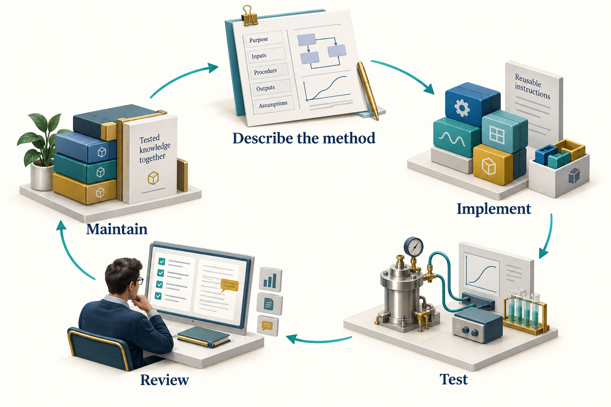
Observation. Figure 6.1 connects the chapter's main ideas. The return path represents maintenance after evidence reveals a gap. Preserve the failing example, update the method and its tests, and review the effect on dependent agents before treating the revised package as accepted practice.
6.3 Give the skill a clear trigger
The description should identify when the skill is useful and when a different workflow is needed. Scope it around an engineering operation, not a broad aspiration.
Compare a description such as help with process engineering with one that says screen gas-compressor power for a supplied composition, inlet state, mass flow, outlet pressure, and assumed efficiency; require a vendor map for operating-window qualification. The latter tells the agent what it can do and which claim it cannot support from the available inputs.
Do not overload a single skill with fluid characterisation, pipeline design, economics, reporting, and approval. Those methods have different evidence requirements and often different owners. An agent can compose focused skills when the study needs them together.
6.4 Use metadata as a contract
The NeqSim skill format uses a SKILL.md file with metadata and structured instructions. Community conventions include a stable neqsim- name, semantic version, description, verification date, and optional dependencies. Use the exact catalog schema in the target repository when preparing a contribution. A host's minimum skill format and NeqSim's richer package contract are different layers: a host may discover a name and description without enforcing the package's engineering dependencies or verification policy.
An illustrative header is:
---
name: neqsim-example-compressor-method
version: "0.1.0"
description: >-
USE WHEN: estimating gas-compressor duty from a complete
fluid and operating basis. Excludes vendor-map qualification.
last_verified: "2026-09-12"
requires:
python_packages: [numpy]
---
The body should then explain inputs, applicability, procedure, output fields, validation, limitations, and references. A verification date should mean that someone checked a stated example against a recorded source revision. Updating the date without repeating the check creates false confidence.
6.5 Write examples that reveal assumptions
A compact fluid example can carry several important rules:
fluid = jneqsim.thermo.system.SystemSrkEos(303.15, 60.0)
for name, mole_fraction in [
("methane", 0.85), ("ethane", 0.10), ("propane", 0.05)
]:
fluid.addComponent(name, mole_fraction)
fluid.setMixingRule("classic")
ops = jneqsim.thermodynamicoperations.ThermodynamicOperations(fluid)
ops.TPflash()
fluid.initProperties()
The skill should state that the first constructor argument is kelvin, the second is bar absolute, and the component values are mole fractions. It should explain why initProperties() follows the flash: thermodynamic initialisation alone does not guarantee that transport properties are ready to read. It should also say how the author confirmed phase existence before querying a gas-only property.
Java examples in this repository must remain Java 8 compatible and use Log4j2 for output. Avoid var, collection factory methods introduced after Java 8, records, and direct console printing. After editing a Java source file, run the repository formatter and formatting check. These conventions belong in shared API and coding skills so domain specialists do not have to rediscover them.
6.6 Include failure cases
The most valuable part of a skill is often its treatment of failure. Give a symptom, an investigation, and an acceptable response.
| Symptom | Investigation | Acceptable response |
|---|---|---|
| Missing method | Inspect loaded source and API | Use the supported method or state the version gap |
| Unexpected liquid phase | Recheck composition and state | Add justified separation or revise the case explicitly |
| Zero transport property | Inspect initialisation and phase | Initialise properties and query a valid phase |
| Failed numerical case | Preserve input and diagnostics | Report failure; retry only under a declared policy |
| Large flow discrepancy | Check mass and standard-volume basis | Correct the conversion with recorded reference conditions |
Avoid a catch-all instruction to keep trying until successful. It can encourage hidden changes and selective reporting. A skill should make failures legible and specify when the agent should stop that calculation.
6.7 Install with dependency awareness
NeqSim catalogs can distribute more than Markdown. Some skills include a Python package with pyproject.toml, supporting examples, and tests. The installer may install that package into an environment. Review the declared dependencies and package behaviour before changing a shared environment.
Use neqsim skill info <name> to inspect a package. The current CLI supports --no-pip for workflows that need to separate content installation from Python dependency changes. The installed environment must still satisfy the skill before execution. Skipping dependency installation is not evidence that dependencies are unnecessary.
The selected interpreter should be passed explicitly to study runners and child processes. A missing package should be reported as an environment issue rather than solved by silently creating another virtual environment. This keeps a study's execution record meaningful.
Separate instruction dependencies from execution dependencies. An agent's required_skills names the reusable methods it needs. A skill may also need Python packages, native software, a server connection, or access to reviewed data. NeqSim agent installation normally resolves missing required skills; --no-pip suppresses Python package installation, while --no-install-missing-skills changes skill-content resolution. Neither option makes an incomplete runtime ready to execute. Optional context skills and coordinated agent names also need attention from the host or coordinator; they are not interchangeable with the hard dependency list. [21]
A portable skill should consume locations supplied by the study. It should read the resolved task directory, optional document library and selected report template from the handoff or study configuration, rather than silently resetting the user's defaults. Source documents remain in the reference library; copies used as evidence belong in the task's per-source reference folders. This lets the same method serve a small local study and a larger shared document collection. [18]
6.8 Verify a skill on a small task set
A useful verification set contains a nominal case, a boundary case, and an invalid input. For a compressor skill, the nominal case can be the synthetic gas basis. A boundary case might approach a phase change or an operating constraint. An invalid input might contain a negative flow or unspecified pressure basis.
The expected behaviour includes more than numerical output. Check whether the skill preserves units, identifies required data, uses the intended API, reports failed cases, and distinguishes estimated duty from machine qualification. Where a quantitative reference exists, define its tolerance and applicability before running the comparison.
Store executable examples beside the skill when its packaging convention permits. Record source revision, input data, expected checks, and dependency versions. Do not claim an accuracy percentage from a successful run alone.
6.9 Improve the right layer
When a task reveals a gap, first identify its owner. A numerical defect belongs in NeqSim code and tests. An incorrect code example belongs in the owning skill and documentation. An unclear handoff belongs in the agent definition and its linked skills. A company-specific approval rule belongs in an enterprise overlay.
Update both sides of a handoff when necessary: the producer's output contract and the consumer's input expectations. If a field changes from pressure in bar to pressure in pascal, changing only one skill creates a silent integration error. Version the contract and repeat an end-to-end example.
The goal is a small, coherent improvement that prevents recurrence. A new skill for every incident can fragment the library. Prefer improving a clearly responsible existing package when the scope fits.
6.10 Skills and other adaptation methods
Skills, retrieval, executable templates, and model fine-tuning address different needs. A skill makes a method explicit and reviewable. Retrieval supplies relevant documents. A tested template reduces variation in repeated calculations. Fine-tuning may change model behaviour across tasks, but it does not replace a current engineering basis or an executable verification record.
Choose a method by the failure you need to address. If the problem is a stale API example, update the example. If the problem is inconsistent numerical code in a repeated workflow, a tested function may help more than a longer prompt. Avoid unsupported general claims that one adaptation method is always more accurate or less costly than another.
Exercises
- Draft a skill outline for the running compressor case, including applicability, required inputs, checks and limitations.
- Add a failure case where the requested inlet stream contains liquid. Specify the expected agent response.
- Design a change record for an API update that affects a skill and two agents.
- Explain why a skill verification date and an installed package version are both needed for reproducibility.
The Task Solving Workflow
Learning Objectives
After this chapter, you should be able to:
- Configure separate study destinations, source libraries and report templates.
- Create a task, complete intake and record the workflow in
study_config.yaml. - Connect selected documents, calculations, validation and results in a portable study.
- Distinguish numerical uncertainty from wider study risks and state the percentile convention.
- Generate and review a work record and reports with the intended title and template.
- Trace a task from request to result, explain each check and decide which conclusions the evidence supports.
- Start the task-solving agent and distinguish host, role, study and runner configuration.
This chapter answers two practical questions: How is an engineering task solved? How do we know whether its answer can be used? The agent plans and coordinates work; NeqSim evaluates the specified model; checks and engineering review establish what the resulting evidence supports. Sections 7.5 and 7.7 describe that sequence, and Section 7.12 applies it to the running compressor example.
7.1 Scope before simulation
A useful specification explains the decision, the physical system, the operating envelope, the available data, the required methods, the outputs, and the acceptance criteria. The agent should identify missing information before that information becomes a hidden assumption.
For the running compressor case, the decision is limited: estimate the operating states and shaft duty under a stated fluid and efficiency model. It does not select a vendor machine. The absence of a vendor map is therefore a declared boundary, not a reason to invent surge or choke margins.
For larger studies, scope also includes jurisdiction, applicable design documents, economic basis, uncertainty ranges, and review responsibilities. Ask only questions that affect the work. A single-property query does not need a full investment model.
7.2 Set the destination, source library and Word template
Continue with the $PythonExe, $ProjectRoot and $NeqSimCli variables from Chapter 1. Every command below runs the selected interpreter against that source checkout. The short neqsim launcher is equivalent when it belongs to the same environment.
Before creating a study, inspect the three independent settings:
& $PythonExe $NeqSimCli --show-task-root
& $PythonExe $NeqSimCli --show-document-root
& $PythonExe $NeqSimCli --show-report-template
To configure them, substitute your chosen study parent, an existing document library, and an existing Word template in these one-time commands:
& $PythonExe $NeqSimCli --set-task-root 'C:\Engineering\Studies'
& $PythonExe $NeqSimCli --set-document-root 'C:\Engineering\Source documents'
& $PythonExe $NeqSimCli --set-report-template 'C:\Engineering\Templates\Study.dotx'
| Setting | Resolution order | What changes |
|---|---|---|
| Task root | Explicit --task-root, NEQSIM_TASK_ROOT, saved user default, repository task_solve |
Destination of newly created studies |
| Document root | Explicit value in the source-discovery API, NEQSIM_DOCUMENT_ROOT, saved document_root |
Library searched for input files |
| Report template | Report --template, NEQSIM_REPORT_TEMPLATE, saved report_template |
Word styles, fonts, headers and footers |
Saved settings live in ~/.neqsim/task_defaults.json. --set-task-root cwd makes new tasks follow the terminal's current folder. A changed default does not move an existing study. The corresponding --reset-task-root, --reset-document-root and --reset-report-template commands remove saved settings; environment overrides still apply.
The source library and the task output folder serve different purposes. Read source documents from the library, preserve selected evidence inside the study, and generate reports in the study. A configured template that cannot be found should produce an error. When no template is configured, built-in styling is available; use the organisation's required template for a branded deliverable.
7.3 Find documents, create the task and complete intake
Start with source discovery:
& $PythonExe $NeqSimCli documents
& $PythonExe $NeqSimCli documents 'compressor'
& $PythonExe $NeqSimCli documents '.pdf'
& $PythonExe $NeqSimCli documents 'API 521'
The first command lists files below the document root. A pattern is a case-insensitive substring of the relative path, including folder names. It is not a wildcard or a full-text search: use .pdf, not *.pdf, to match that extension. The search descends into subfolders and skips hidden names. An empty match, an unset root and a configured but unreadable root are different outcomes; investigate the actual diagnostic before concluding that a document is unavailable.
Now create the running compressor study. The argument array keeps a longer PowerShell command readable:
$CreateTask = @(
'new-task', 'Gas compression screening',
'--type', 'B', '--scale', 'standard',
'--report-depth', 'standard',
'--intake-pause', 'always'
)
& $PythonExe $NeqSimCli @CreateTask
This creates a dated task directory and prints its absolute path. Type B identifies a process task; the scale describes the depth. For a one-off destination, add --task-root and the parent path to the arguments. To seed the original request from a file, add --prompt-file and its text or Markdown path. Neither option requires changing the saved defaults.
Use the printed path, rather than guessing the date or slug:
$TaskDir = 'C:\path\printed\by\new-task'
$env:NEQSIM_TASK_DIR = $TaskDir
Get-Content -LiteralPath (Join-Path $TaskDir 'README.md')
Get-Content -LiteralPath (Join-Path $TaskDir 'study_config.yaml')
Creation scaffolds the folder; it does not run an engineering agent or solve the study. --intake-pause always records the requested intake policy and prints a reminder. The task-solving agent applies that policy when it reads the configuration: it pauses for the user to confirm the basis and files before analysis. With auto, the pause depends on the study scale and missing critical inputs. With never, assumptions must still be explicit and a method-invalidating gap remains a reason to stop that calculation.
Open study_config.yaml in the editor before the agent plans notebooks. It is the study's executable-workflow contract, while task_spec.md explains the engineering basis. Important fields include:
| Field | Reader decision |
|---|---|
study.title, study.author, study.classification |
Report identity and information classification |
study.scale |
auto, quick, standard or comprehensive: requested effort |
study.deliverable_mode |
auto, answer-first, notebook-first or report-first: what the agent should prioritise |
intake.pause_after_folder_creation |
Whether to wait for the input handoff |
inputs.document_root, inputs.documents |
Source library snapshot and selected study evidence |
analysis.engine |
auto, notebook, script or hybrid: how calculations are organised |
notebooks.plan, notebooks.execution_required |
Which notebooks to produce and execute |
report.depth |
auto, brief, standard or detailed: requested writing depth |
report.formats, report.work_record |
Requested formats and method record; see the implementation limits below |
quality_gates |
Required validation, uncertainty, risk and consistency checks |
Task creation records a configured document root in inputs.document_root. Preserve the accepted value for the study rather than silently switching it after a user default changes. Keep the complete generated configuration and edit the relevant fields; replacing it with an abbreviated example can discard requirements.
Start with these decisions. Set the task's title and choose the amount of work: a Quick property answer or a Standard process study. Review the proposed notebooks and outputs, choose whether intake needs a pause, and tell the agent which evidence and review are required. The task folder controls where this work is saved; the document root controls where source files are found; the report template controls Word styling.
For example, a short methane calculation can request quick, answer-first and brief. A documented compressor study can request standard, report-first and standard, then add the required benchmark and uncertainty work to its plan. These are values of separate settings, not a single command. Review the generated defaults against the actual scope: selecting a scale does not guarantee that every needed analysis has been planned or completed.
At creation, the Standard scale seeds a main-analysis and a benchmark notebook in the plan. Add a separate uncertainty-and-risk notebook when required by the study; the expanded example below includes it. A Quick task starts with one planned main notebook. A Comprehensive task starts with a broader plan. The agent still has to create, complete and execute the planned work.
The configuration is a contract between the user, agent and tools, and each part has a different effect. Destination and template settings are resolved by the commands. Study scale, deliverable emphasis and report depth guide the agent's planning and writing; they do not perform the engineering work or automatically shorten a report. The current report command produces Word and HTML. Although report.formats records requested formats, the current generator does not use that list to select its outputs. Adding pdf to the list alone does not create a PDF. Arrange and check an additional export when that deliverable is required. [3]
Put the original request in user_input.md. Append clarifying answers and later instructions verbatim, and record inferred assumptions separately. This gives the next engineer a record of what was asked as well as what was implemented.
Copy the selected, authorised documents into step1_scope_and_research/references/, grouped by source such as vendor, lab, literature or manual. Preserve document identifiers, revisions and origin. Extract relevant values, tables and diagram relationships, normalise units and validate the interpretation before using a document-derived value in a model. Listing a filename does not perform that work. Rebuild the source index:
$SourceIndexer = Join-Path $ProjectRoot 'devtools\generate_sources_md.py'
& $PythonExe $SourceIndexer $TaskDir --organize
Agent prompt — after the intake material is ready:
Continue the existing Gas compression screening task at [absolute task path]. Read README.md, study_config.yaml and user_input.md. Use the selected Python executable [path] and NeqSim source [path]. The intake basis and supplied files are ready; proceed with the agreed scope. Read and validate the selected documents, fill the task specification, discover the relevant agents and skills, and record gaps before constructing the model. Produce the configured evidence and report without changing the accepted input basis silently.
7.4 Which files are created, and what are they for?
A typical Standard process study grows into this structure:
study/
README.md
study_config.yaml
user_input.md
progress.json
step1_scope_and_research/
task_spec.md
capability_assessment.md
analysis.md
neqsim_improvements.md
notes.md
references/
SOURCES.md
collection_manifest.json
literature/
vendor/
manual/
step2_analysis/
01_main_analysis.ipynb
02_benchmark_validation.ipynb
03_uncertainty_and_risk.ipynb
figures/
results.json
consistency_report.json
step3_report/
generate_report.py
WORK_RECORD.md
Gas_compression_screening.docx
Gas_compression_screening.html
The tree shows a completed study's intended evidence. A new task begins with instructions and templates; its results arrive through the subsequent work. Use this file guide when opening the folder for the first time:
| File or group | When it appears and how to use it |
|---|---|
README.md |
Created at the start. Read it for the task's workflow and entry points. |
study_config.yaml |
Created at the start. Edit the task's settings, requested outputs and work requirements here. |
user_input.md |
Created at the start. Preserve the original request, later instructions and supplied clarifications. |
| Step 1 Markdown files | Created as templates. The agent fills the specification, research notes, capability assessment and analysis. A template's existence is not completed research. |
references/ |
Starts with guidance. Add the selected source documents; the source-index command creates or refreshes SOURCES.md and its manifest. |
| Step 2 starter notebooks | Created under starters/ as examples. The agent prepares the actual planned notebooks and executes them. A notebook name in the plan is not an executed notebook. |
figures/ and results.json |
Calculations produce the plots and structured result data. A new task has a figure placeholder but no calculated results.json. |
progress.json |
Maintained during an agent workflow to record checkpoints and open work. It is not created by the initial scaffold. |
consistency_report.json |
Written when the consistency checker is run. Read its coverage and individual findings. |
| Step 3 report files | The report launcher exists from the start. The work-record and report commands produce WORK_RECORD.md and the title-based Word/HTML files later. |
For the running example, the report filenames are Gas_compression_screening.docx and Gas_compression_screening.html. Readers normally start with the report for the answer, then open the work record for how it was obtained. Reviewers follow the result data, notebooks and references to examine the evidence. Edit the task basis and source calculations when a result changes, then regenerate the affected outputs; editing a number only in Word leaves the study inconsistent.
Configure the work before it starts
Treat study_config.yaml as the settings file and task_spec.md as the engineering explanation. In the settings file, confirm the title, scale, intake behaviour, notebook plan and deliverables. In the specification, state composition, operating conditions, methods, acceptance criteria and important assumptions. This avoids hiding engineering decisions inside a list of filenames.
Tell the agent to read both files when continuing an existing task. If a later request changes the scope or output, update the relevant setting and preserve the instruction in user_input.md. Record which calculations and reports need to be repeated. Changing the default task folder, document library or template does not by itself revise the accepted basis of an existing study.
Select the agents and plan the analysis
For Standard and Comprehensive studies, discover candidate skills and agents, then inspect their definitions:
$SkillSearch = Join-Path $ProjectRoot 'devtools\skill_search.py'
$AgentSearch = Join-Path $ProjectRoot 'devtools\agent_search.py'
& $PythonExe $SkillSearch 'gas compression study' --top 5
& $PythonExe $AgentSearch 'gas compression study' --top 8
Record the selected composition and rationale in capability_assessment.md and the result record. The assessment should identify supported methods, missing input data, validation needs and any work for another discipline. A returned class or agent name is a candidate, not a completed assessment.
Before simulation, write an order-of-magnitude estimate. Chapter 10 illustrates this with a compression-temperature estimate and an energy balance. The estimate helps expose unit mistakes and implausible trends before they become polished results.
Every specialist receives the same absolute task path, basis revision and selected interpreter. Give each writer a distinct output artifact and one coordinator responsibility for merging shared results. The report author consumes the accepted calculations and review findings.
7.5 How is an engineering task solved?
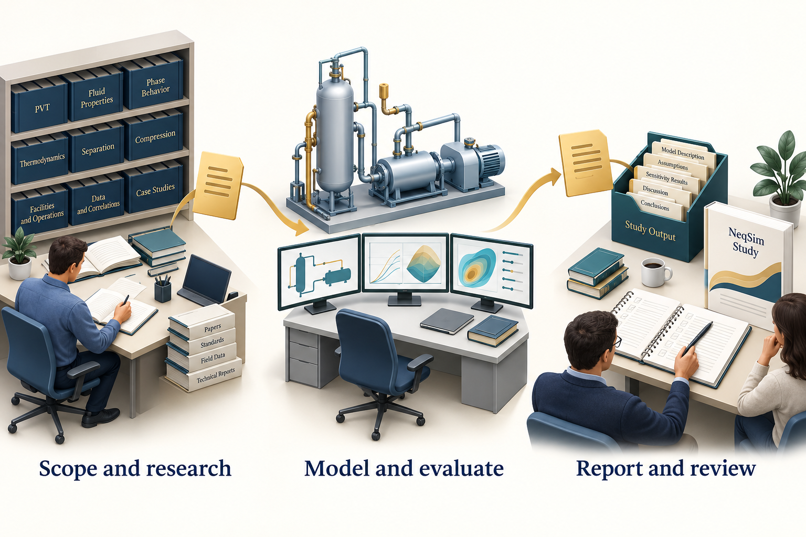
Observation. Figure 7.1 connects the chapter's main ideas. Input documents feed a scoped model, while the study folder retains calculations, checks and the report. Changes to the basis should be recorded and propagated through that chain rather than edited only in the final document.
These stages are iterative. A failed benchmark may return the study to model selection. A missing flow reference condition may return it to data collection. Preserve the old basis and record why the new one replaced it.
The practical sequence is as follows:
- Turn the request into a decision and a basis. Record what the user needs to decide, the inputs and units, the operating cases, required outputs and acceptance criteria. Clarify missing information that could change the method or conclusion. The resulting task specification gives every later calculation a purpose.
- Find evidence and select a method. Read the selected documents, record their origins and check that their values apply to this case. Discover suitable agents and skills, inspect the relevant NeqSim capabilities, and record unsupported requirements. Choose the model because it fits the physical question and available evidence.
- Divide the work into checkable outputs. For the compressor study, these include the base flowsheet, pressure sensitivity, benchmark assessment and uncertainty analysis. Specify the input basis and expected artifact for each piece. One agent can perform several roles; multiple agents are useful only when their responsibilities and handoffs are clear.
- Build and execute the calculation. Prepare a script or notebook using the selected source checkout. Start with a small base case, inspect its phases and outputs, and then execute the planned cases. Generate figures and result tables from those outputs. A proposed tool call or a code listing has no execution evidence until it has run.
- Inspect observations and resolve failures. Compare the results with the declared checks in Section 7.7. Diagnose a failure before retrying: a missing input, incorrect unit, unavailable class and numerical failure require different repairs. Record the cause and change, then repeat the affected calculations and checks. Preserve failed cases alongside successful ones.
- Explain the result and hand over the evidence. Assemble the accepted inputs, calculations, checks, limitations and conclusion in the result record, work record and report. The responsible reviewer decides whether the evidence supports the intended use, or whether more data or analysis are required.
An agent need not call a language model during every numerical operation. Once it has prepared and checked a pressure sweep or Monte Carlo runner, that code can execute the repeated NeqSim calculations directly. The agent reviews the resulting observations and decides what additional work is justified. This separates workflow decisions from the numerical solver. [3, 4]
Start the task-solving agent
The coordinating role is defined in .github/agents/solve.task.agent.md. Its current display name is solve engineering task. Open the source checkout in the AI host, select that role if the host exposes it, or ask the host to read and apply the definition. The notation @solve.task in repository examples identifies the role; the available selector and display name depend on the host. Chapter 5 explains how packages are installed and exported.
After creating and configuring the compressor study in Sections 7.2-7.4, send this prompt with actual paths substituted:
Apply the task-solving role in .github/agents/solve.task.agent.md. Continue the existing study at [absolute task path]; do not create a second task. Use [absolute NeqSim source path] and [absolute Python executable]. Read README.md, user_input.md, study_config.yaml and the current task specification; read progress.json if it exists. Estimate compressor duty and operating temperatures for the recorded gas basis and pressure cases. First summarise the effective settings, missing inputs, selected specialists and planned outputs. Respect the intake pause. Then execute the agreed work, record checks and unresolved validation gaps, and produce the configured work record and report. Keep all study outputs in this task folder.
The agent should first make the work inspectable: name the task, identify the accepted input basis, state which instructions and skills it will use, and show the planned files and checks. If the intake policy requires confirmation, that happens before dependent analysis. On resuming, the agent reads the recorded state and checks existing artifacts before deciding what remains; it should not assume that an earlier chat promise means a calculation succeeded.
Know which setting controls which part
There is no single setting that configures every part of a NeqSim agent. Use the following map when deciding what to change:
| Part | Where it is configured | What the reader changes |
|---|---|---|
| AI host | The host's session or workspace settings | Selected language model, workspace access, tools and execution permissions |
| Agent role and skills | The selected agent definition and the skills it loads; repository instructions also apply | Reusable responsibilities, methods, required evidence and handoff rules |
| One engineering study | study_config.yaml, task_spec.md and the preserved requests in user_input.md |
Study depth, inputs, planned analyses, outputs and acceptance criteria |
| Calculation execution | Runner arguments, notebook settings and the selected Python/Jupyter environment | Execution mode, time limit, attempt limit, parallel jobs, source checkout and kernel |
Choose a different role when the engineering responsibility changes. Change study_config.yaml when the same role needs to produce different work for one study. Change the host's model or tool settings when its execution capabilities need to change. A report template controls document appearance; it does not select the language model or the physical model. Host permissions still determine which operations are available, even when an agent definition requests them. [3]
How the coordinator uses specialists
The task-solving agent discovers relevant agents and skills using the searches in Section 7.4. For the compressor example, it may use a fluid specialist to check composition and phases, a process specialist to build the flowsheet, and a reviewer to challenge the evidence. These are responsibilities to assign, not proof that three separate agents ran. The host must support delegation for separate agent execution; one agent can otherwise apply the roles sequentially.
Each handoff should carry the same absolute task path, source checkout and Python executable, together with the accepted inputs, the bounded question, the file the specialist owns and the required checks. The specialist returns that artifact, its execution status, findings and unresolved gaps. The coordinator reconciles the findings and merges the result record. Record the agents actually used in agent_workflow_plan; a discovery list is only a set of candidates. Keep one owner for shared files such as results.json.
Configure the calculation runner
The current task-solving instructions normally use neqsim_runner for notebook execution. This is a supervisor for calculation jobs. It starts Python processes, records their status and supports bounded retries; it does not choose an AI model or solve an engineering request by itself. The agent prepares the calculation and supplies its inputs before submitting it.
In the existing study configuration, the relevant notebook fields look like this. Edit these fields in place and preserve the rest of the file:
notebooks:
execution_engine: neqsim_runner
runner_mode: execute
runner_max_retries: 3
runner_timeout_seconds: 3600
runner_max_parallel: 1
runner_merge_results: true
execute preserves executed notebook outputs; script runs converted code cells and does not produce an executed notebook. The current supervisor interprets runner_max_retries: 3 as at most three attempts in total. The timeout applies to an attempt, and serial execution limits simultaneous JVM load. These controls manage execution, not physical accuracy.
The agent must read these values and pass them to the runner's submission and execution calls. AgentBridge does not automatically read study_config.yaml. With an explicit task directory, it keeps runner.db and runner_output/ inside that task and maintains progress.json. Supply the source checkout separately; an external study folder cannot identify it reliably.
The Python worker reuses its launching interpreter. Execute-mode notebooks additionally use the kernelspec selected by NEQSIM_KERNEL_NAME, or python3 by default. Check that this kernel points to the intended Python executable. Inspect each job's recorded status and the produced artifacts: the runner command returning is not itself proof that every job succeeded. Then apply the engineering checks in Section 7.7. [3]
If the method cannot answer the question with the available evidence, record an unresolved finding and the next action. Changing the input basis to make a test pass, omitting failed cases or increasing a tolerance without justification would break the connection between the request and the answer.
7.6 Use structured results as the reporting source
results.json is the bridge between calculations and reports. It should contain actual outputs, units, validation findings, figure captions, interpretations, and source references. The following reduced example shows a structure; its empty result object is intentional and must be populated from execution:
{
"key_results": {},
"approach": "SRK with classic mixing rule; synthetic teaching gas",
"validation": {
"independent_validation_completed": false
},
"agent_workflow_plan": {
"workflow_type": "single_agent",
"rationale": "Small, bounded teaching calculation"
},
"figure_captions": {},
"figure_discussion": [],
"references": []
}
The complete study schema has additional required fields. Use the selected revision's validator rather than assuming this illustrative fragment is sufficient for release.
Load the existing results before adding data. Merge new keys and append discussions without discarding previous work. Give one coordinator responsibility for the final merge if several specialists produce results. Do not let parallel writers overwrite the same file.
A figure discussion should state the observed trend with values, explain the mechanism, identify its engineering implication, and recommend a specific next step. A caption alone rarely carries all four.
7.7 How is the solution verified?
Verification examines implementation and execution. Examples include API checks, regression tests, finite-value checks, material balance, and reproducible re-runs. Validation compares the model with independent evidence for the intended use. A model can pass verification while being unsuitable for the application.
For each applicable check, record the input revision, the criterion, the observed value, the outcome and the evidence file. Define the criterion before judging the result. Keep the questions separate:
| Question | Evidence to inspect |
|---|---|
| Did we solve the requested problem? | Task specification, selected cases and accepted changes to the basis |
| Did the intended calculation run? | Executed notebook or script, run status, source revision and actual inputs |
| Are the numbers internally consistent? | Finite-value checks, balances with explicit boundaries, units and limiting cases |
| Did a software change alter the result? | Comparison with a preserved regression baseline and an explanation of any difference |
| Does the model represent this application? | Independent reference data with matching states, quantities and justified tolerances |
| Does the recommendation follow? | Acceptance criteria, uncertainty, unresolved findings and review for the intended use |
A numerical failure should trigger diagnosis and a repeat of the affected checks. A failed independent comparison may instead require better input data or another model. If a reference is unavailable, record validation as unresolved and narrow the conclusion. A second agent can challenge the interpretation, but repeating the same calculation does not add independent physical evidence.
Choose benchmark data with matching composition, conditions, units and measured quantity. Comparing a system-average density with a measured liquid density is not a valid benchmark. Define tolerances before examining the result and explain whether they reflect measurement uncertainty, engineering requirements, or a numerical regression threshold.
For Standard and Comprehensive studies, the workflow requires a separate benchmark notebook with multiple reference points and a parity or deviation plot. If suitable independent data are unavailable, retain that gap and limit the conclusion. Do not replace the reference with another run of the same model and call it independent.
Check the result-file structure inside the engineering task folder:
$ResultValidator = Join-Path $ProjectRoot 'devtools\validate_task_results.py'
& $PythonExe $ResultValidator $TaskDir
Read both the diagnostics and the number of files checked. The current command can return successfully after finding no result files; a skipped check supplies no verification evidence. Errors fail the command, while warnings normally do not. --strict-warnings also treats warnings as failures. The validator examines the result structure and selected evidence fields; it does not establish that a stated acceptance flag is true in the physical world.
Before generating the report, run the consistency checker:
$ConsistencyChecker = Join-Path $ProjectRoot 'devtools\consistency_checker.py'
& $PythonExe $ConsistencyChecker $TaskDir
Resolve critical mismatches among notebooks, result data, tables and prose. The current consistency checker is a heuristic screen for selected numerical and textual patterns; it does not execute notebooks or compare every possible engineering quantity. Inspect its findings and how many notebooks and values it examined. Retain explicit case-specific assertions, such as the compressor balances in Chapter 10, even when the screen reports no critical issue.
Likewise, a valid result-file structure does not establish physical accuracy or mean that every acceptance criterion passed. Read the individual findings, tolerances and warnings. Some configured report gates currently produce warnings while allowing files to be generated. A written report therefore needs a separate completion judgement against the study requirements. [3]
7.8 Uncertainty belongs in the model inputs
Select uncertain parameters because they can affect the decision. For compression, candidates include composition, flow, inlet temperature, pressure loss and efficiency. For field development, resource estimates such as gas initially in place (GIP) or stock-tank oil initially in place (STOIIP) must also carry uncertainty. Price and cost uncertainty belongs in the economic calculation, with a declared currency and valuation date.
Use full NeqSim simulations for technical Monte Carlo cases where an appropriate NeqSim model exists. Generate the simulation function once, then execute it parametrically. Cache calculations that do not change. Economic-only sensitivities can reuse a production profile when the economic parameter does not alter production decisions.
The Standard workflow sets a minimum of 200 NeqSim Monte Carlo realisations. That is a procedural minimum, not proof of stable tail estimates. Check convergence of the reported statistics, record the random seed and distributions, and preserve failed cases. Correlated inputs need a joint sampling model; independent draws may produce physically inconsistent combinations.
7.9 Define the percentile convention
Percentile labels are used differently across disciplines. In a non-exceedance convention, P10 is the 10th percentile and is lower than P90. In petroleum resource reporting, P90 commonly refers to a high probability of exceedance and therefore a lower estimate. State the convention beside every table and plot.
For a continuous non-exceedance output distribution, the quantile $q_p$ satisfies
For a discrete or empirical distribution, the cumulative probability can jump over the requested probability. The book's finite-sample calculation uses NumPy's linearly interpolated sample quantiles.
Do not combine a petroleum exceedance resource table with a statistical non-exceedance NPV table under an unexplained shared P10/P50/P90 heading. Use explicit labels when the study contains both.
A tornado diagram shows sensitivity under selected perturbations; it is not a substitute for a joint uncertainty distribution. Its ranking can depend on the assumed ranges and on interactions between inputs.
7.10 Risk extends beyond numerical uncertainty
A Monte Carlo analysis describes uncertainty represented by its model and input distributions. It does not automatically cover missing data, model misuse, schedule delay, regulatory change or operational hazards.
Maintain a risk register with descriptions, causes, consequences, owners and mitigations appropriate to the study. ISO 31000 provides risk-management guidance; it does not prescribe one universal five-by-five scoring matrix. If the project uses such a matrix, record its definitions and decision rules. [35]
A risk entry should be actionable. For example, uncertain heavy-end composition may affect condensation and liquid handling. The mitigation could be a new laboratory analysis and a defined sensitivity study. A generic entry saying model risk is high gives the team little direction.
7.11 Generate the work record and the report
The report explains the answer. The work record explains how the study produced it and where the evidence lives. Build the method record from the task folder:
& $PythonExe $NeqSimCli work-record $TaskDir
Expect step3_report/WORK_RECORD.md. It gathers the task basis, input sources, scripts, notebooks, cached data and an annotated file map. Complete its background, method and limitations narrative blocks with study-specific explanations. The generator preserves text inside its WORK_RECORD:NARRATIVE markers when it runs again.
For a study driven by data-retrieval scripts, declare their purpose and outputs in analysis.scripts and the source-system evidence in inputs.data_sources inside study_config.yaml. A script-backed workflow can explicitly set analysis.engine: script and notebooks.required: false, with consistent execution gates. The absence of notebooks does not remove the need for reproducible computation, provenance or validation. For the running process example, use the configured NeqSim notebooks.
Check the completed work record:
& $PythonExe $NeqSimCli work-record $TaskDir --check
Resolve missing or placeholder content before claiming that the record is complete. An automatically generated file inventory is a starting point; the explanation of method and limitations must describe the actual study.
After the results, validation and consistency checks are complete, generate the report:
& $PythonExe $NeqSimCli report $TaskDir
The command runs the canonical report generator from the selected NeqSim checkout against this task. The task-local step3_report/generate_report.py is a launcher, so shared generator fixes can reach existing studies. Preserve the source revision used for a published report rather than assuming a later generator produces identical output.
Report identity normally comes from study.title in study_config.yaml. A command-line --title takes precedence, followed by NEQSIM_REPORT_TITLE and the study configuration. For the title Gas compression screening, the generated files are Gas_compression_screening.docx and Gas_compression_screening.html under step3_report. Spaces become underscores and unsafe filename characters are removed; read the actual output paths printed by the generator. The work record retains its fixed name, WORK_RECORD.md.
To use a specific title or template for one run, pass the supported overrides:
$ReportArgs = @(
'report', $TaskDir,
'--title', 'Gas compression screening',
'--template', 'C:\Engineering\Templates\Study.dotx'
)
& $PythonExe $NeqSimCli @ReportArgs
The report generator reads the configuration, task specification and structured results, and normally generates the work record alongside the report. A required missing template, result, source-evidence item or configured deliverable must be resolved or explicitly recorded as a limitation under the study's review rules. Do not label a report complete merely because a file was written.
Review the report against the original decision: are the model basis, supported results, unresolved issues and next action clear? A screening calculation can be complete without selecting a vendor machine. A machine-selection claim needs the additional evidence. Reusable API, skill and handoff improvements belong in the appropriate repositories; confidential task data remain in the authorised study.
7.12 Follow one result from request to decision
Consider the Chapter 10 request: estimate the shaft duty and operating temperatures for the stated dry-gas feed, compression target and assumed efficiency. The teaching calculation uses the Chapter 1 basis. Its model contains a feed, inlet separator, compressor and aftercooler; the separator liquid outlet remains part of the accounting even when its calculated flow is negligible.
The base calculation predicts 337.269 kW compressor duty and 93.749 degrees C discharge temperature. To assess that answer, follow the evidence rather than stopping at the number:
| Check in the executed example | Criterion and observation |
|---|---|
| Numerical outputs | All stored base-case values are finite |
| Separator mass balance | Relative inlet-minus-gas-and-liquid residual is below 1e-8; recorded value is zero |
| Aftercooler target | Outlet temperature differs from 35 degrees C by less than 1e-6 degrees C |
| Whole-train energy balance | Absolute residual is below 1e-5 kW; the recorded residual is approximately -5.68e-14 kW |
| Software repeatability | Base results and pressure-sweep outputs agree with the preserved book baseline within the declared regression tolerances |
The explicit balance in Section 10.3 includes feed enthalpy, the final cooled stream, separator liquid, compressor work and cooler heat transfer. Its tolerance is a numerical consistency criterion for this example. It does not measure the accuracy of the equipment model against a real machine.
The executable checks are in the companion package's verify_examples.py, with values under compression_base in the book's results.json. The Chapter 10 notebook and the preserved baseline record repeatability; the Java regression suite exercises the same numerical engine through Java directly. The book result file aggregates several teaching cases and differs from the generic result schema used inside an individual NeqSim task folder.
The evidence supports a reproducible prediction for the declared synthetic case. Application validation of the compressor remains open because this example has no independent vendor performance data or plant measurements. The methane reference comparison in Chapter 9 does not validate the entire compressor train. A reviewer can accept the calculation for explaining the method while requiring additional evidence before using it for machine selection.
If the energy check had failed, the next step would be to inspect units, sign conventions, stream boundaries and equipment duties, then rerun the corrected calculation. If the balance passed but measured power disagreed, the investigation would also cover composition, efficiency, operating conditions and model suitability. These are different findings and need different remedies.
Exercises
- Create a study with an explicit task root and an intake pause. Identify which files are scaffolded and which must be produced by the engineering work.
- Explain how
documents 'compressor'differs from a full-text search, and record the origin of one selected reference. - Set the intended report title in
study_config.yamland predict its output filenames. Verify them after a completed study is rendered. - Define a result-file ownership policy for three specialists and describe the method evidence their work record should contain.
- Explain the difference between a regression comparison, a physical sanity check and independent validation.
- Design an uncertainty study with one technical and one economic parameter. State which calculations can be reused and label the percentile convention explicitly.
- Use the compressor walkthrough to write a short answer stating how the task was solved, which checks passed, which evidence remains missing and what use of the result is justified.
- In a new task folder, identify the files created immediately and those that still require work. Configure a brief answer, then explain what you would change for a documented process study and a PDF deliverable.
- Explain where to change the AI model, the study depth, a specialist's method and the notebook timeout. Write a handoff that preserves the task path, source checkout, interpreter and required evidence.
MCP and Governed Calculation Services
Learning Objectives
You should be able to distinguish the MCP protocol from the NeqSim implementation, discover a tool's input contract, interpret its result and diagnostics, and identify deployment controls that belong outside the model prompt.
8.1 Why expose calculations as tools
Direct Python or Java code gives an engineer substantial flexibility. A repeated calculation can also be exposed through a narrower service interface with explicit inputs, validation and structured outputs. This makes the operation easier for an agent to discover and for a runtime to supervise.
The Model Context Protocol, or MCP, provides a standard interaction model for hosts, clients and servers. A host manages the user interaction and permissions. Its client connects to a server, discovers capabilities, and calls tools. The server performs the requested operation and returns a result. MCP standardises the interface; it does not certify the engineering calculation. [36]
8.2 NeqSim separates transport from calculation
The NeqSim MCP server is a Quarkus-based service. It delegates to framework-independent classes in the core library's neqsim.mcp packages. These include runners, request and result models, and catalogs of examples and schemas.
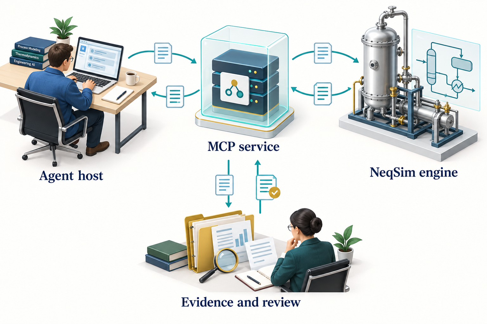
Observation. Figure 8.1 connects the chapter's main ideas. The service boundary and numerical engine have different responsibilities. Transport, schemas and access controls need their own checks; numerical outputs still require physical interpretation and application-specific evidence.
The MCP core-layer guide describes FlashRunner, ProcessRunner, typed result envelopes, and the capability and schema catalogs. [37]
8.3 Discover before calling
Use the connected server's advertised tool list and current schemas. NeqSim provides discovery entry points such as getCapabilities, getExample, and getSchema. These help an agent determine the accepted input, supported units, expected output and available examples.
The server's tool list and deployment profiles can change. Avoid hardcoding a tool count into a workflow or assuming that a tool described in an older book is enabled on the current server. A deployment profile can expose a selected subset or apply additional policy.
Agent discovery and tool discovery are separate operations. The community catalog describes engineering workflows and their dependencies. MCP discovery describes the tools exposed by a connected server. Installing a community agent does not start an MCP server, register that agent as a server tool, or establish the credentials required by its integrations. Match the agent's method to the actual tool contract before execution. [20, 21]
MCP tools can provide input schemas, optional output schemas and annotations describing behaviour. Annotations are hints for clients; they do not enforce an access policy or prove that a remote tool is harmless. Validate the server identity and apply the host's controls. [36]
8.4 Two JSON shapes with different purposes
The core FlashRunner accepts a structured calculation request. A representative input is:
{
"model": "SRK",
"temperature": {"value": 25.0, "unit": "C"},
"pressure": {"value": 50.0, "unit": "bara"},
"flashType": "TP",
"components": {"methane": 0.85, "ethane": 0.10, "propane": 0.05},
"mixingRule": "classic"
}
The MCP wrapper's runFlash tool exposes arguments using its own tool schema. In the documented wrapper, composition is passed as a JSON string and temperature and pressure units are separate arguments:
{
"name": "runFlash",
"arguments": {
"components": "{\"methane\":0.85,\"ethane\":0.10,\"propane\":0.05}",
"temperature": 25.0,
"temperatureUnit": "C",
"pressure": 50.0,
"pressureUnit": "bara",
"eos": "SRK",
"flashType": "TP"
}
}
The second block represents the parameters of an MCP tools/call request, not a complete session handshake. Most hosts construct the JSON-RPC envelope and manage initialisation themselves. Do not interchange the core-runner request and tool arguments without the adapter that maps them. Verify the current schema before reproducing the call. [37]
8.5 Interpret success carefully
Inspect status, data, units, warnings, diagnostic issues and provenance. A successful result means the tool completed under its contract. It may still contain warnings about applicability or missing evidence. A tool error and a physically implausible successful result need different investigations.
For a flash request, check the model, input basis, phases present, finite properties and the requested quantity. For a process request, inspect convergence and the relevant balances. For an engineering package, inspect the case basis, exchange profile, evidence and qualification state.
A trace identifier is useful only if it resolves to retained evidence. Preserve the exact request, result, tool and library revisions, and any validation artifacts needed by the study. Do not replace the tool output with a manually retyped summary as the sole record.
8.6 Choose a deployment appropriate to the work
The public 3.20.0 distribution includes an MCP runner JAR requiring Java 21+ and a container image. Local clients can use standard input/output transport. Network clients use the server's supported HTTP transport and deployment configuration. The core library's Java compatibility requirements are separate from those of the server. [2]
For a desktop workflow, the host starts a local server process and exchanges messages with it. Keep diagnostic logging separate from the protocol stream. For a shared service, authentication, network boundaries, quotas, logging and data retention require explicit configuration. A local test configuration should not be copied unchanged to a shared network deployment.
Use the release-specific MCP server documentation for launch commands and client configuration. Pin the actual distribution and retain its checksum when packaging a reproducible environment.
Resolve file locations at the execution boundary. A document root on the engineer's computer is not automatically visible inside a container or on a remote server. A deployment must provide an authorised mount, upload, or retrieval route and preserve the source identity. Likewise, a server result must be returned to the intended active study, not whichever directory happens to be current in a worker. Record these mappings alongside the runtime configuration. The task and document defaults described in Chapter 7 help the local workflow select locations; they do not configure remote filesystem access. [18]
8.7 Govern effects as well as calculations
Reading a component database, executing a simulation, writing a report and changing an operating system have different consequences. Separate those capabilities in the runtime. Access to a calculation service is not permission to write to a plant control system.
Inputs retrieved from PDFs, web pages or tool responses can include irrelevant or hostile instructions. Treat them as data. They must not override the user's scope, secret-handling rules or execution policy. Private integrations should expose only the information needed for the study.
Long-running simulations also need supervision: execution limits, cancellation, checkpoints, output ownership and failure reporting. These are runtime responsibilities. A sentence in a prompt asking an agent to be careful is not an execution control.
8.8 Test the service in layers
Begin with runner tests for deterministic input and output behaviour. Then check schemas and response contracts. Test the server transport with a known request. Finally, evaluate the agent using the service on representative engineering tasks.
Include invalid units, unsupported components, missing fields, solver failures and permission failures. Verify that errors remain visible rather than being converted to empty successful results. Where a benchmark exists, test its stated applicability separately from protocol correctness.
A live MCP integration is not exercised merely by running FlashRunner in a local Python process. The book's execution record identifies such checks separately. This avoids overstating what a convenient local demonstration proves.
Exercises
- Compare the two JSON examples and identify the mapping performed by the server wrapper.
- Describe the evidence you would retain for a shared-service compressor calculation.
- Explain why a read-only annotation and a restricted runtime are different controls.
- Design a test that distinguishes a transport failure from an engineering-input failure.
Part III: Worked Examples
Thermodynamic Property Calculations
Learning Objectives
You should be able to construct a property calculation with explicit units, compare EOS predictions with an independent reference, interpret phase information, and avoid common gas-quality and phase-envelope mistakes.
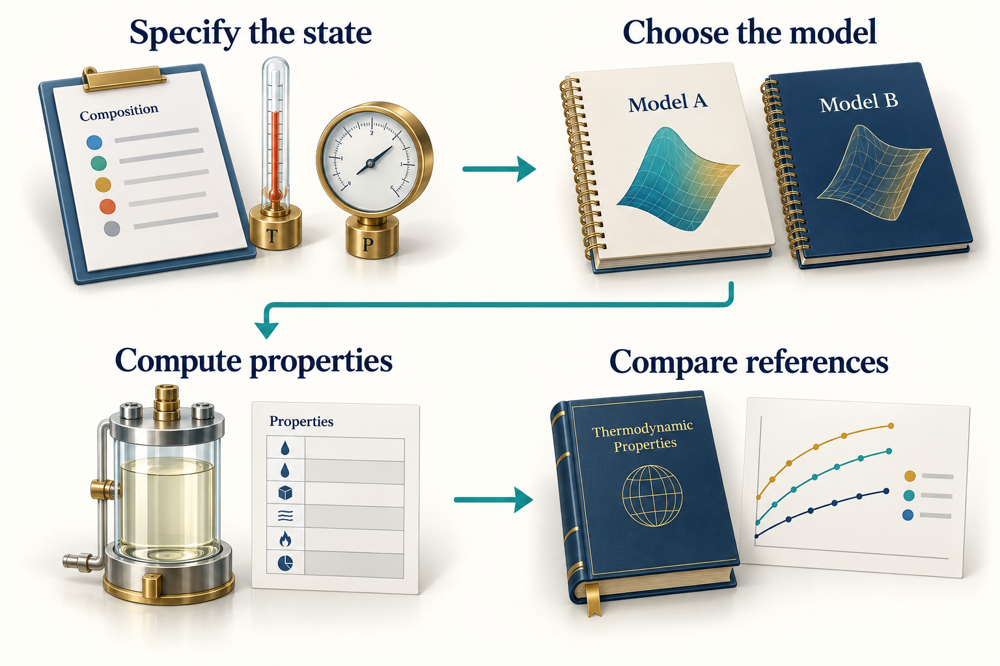
Observation. Figure 9.1 connects the chapter's main ideas. The reference comparison must use the same composition, temperature, pressure, phase meaning and property units as the model. The small decorative curves have no numerical meaning; the specified-state labels and calculated values appear in the actual comparison below.
9.1 Start with a controlled comparison
Pure methane at 298.15 K provides a useful first comparison because composition uncertainty is removed. The book calculates density using SRK and PR at 1, 51, 101, 151 and 201 bara. These pressures follow a regular reference-data request; they are not intended to represent a particular plant.
The independent comparison uses NIST Chemistry WebBook thermophysical-property data at the same temperature and pressures. These are reference-model values supplied by NIST, not new experimental measurements made for this book. Preserve that distinction when interpreting the comparison. [38]
The executable source is verify_examples.py, and the numeric outputs are in results.json. The companion notebook reproduces the chapter's tables and figures from those recorded runs. If reference retrieval fails on another machine, retain that failure and do not silently replace the reference with one of the models under comparison.
9.2 Construct and execute the calculation
After the Chapter 1 source bootstrap, a single case is:
fluid = jneqsim.thermo.system.SystemSrkEos(298.15, 101.0)
fluid.addComponent("methane", 1.0)
fluid.setMixingRule("classic")
ops = jneqsim.thermodynamicoperations.ThermodynamicOperations(fluid)
ops.TPflash()
fluid.initProperties()
rho = float(fluid.getDensity("kg/m3"))
z_factor = float(fluid.getZ())
print({"density_kg_m3": rho, "compressibility_factor": z_factor})
Create a new fluid for each model and state in the comparison. Reusing a mutable object without resetting all relevant conditions can carry state from a previous case. Record model and mixing rule with every result row, even when they seem obvious from the code.
9.3 Compare the same quantity at the same state
The relative density deviation is
It is a percentage deviation from the selected reference. It is not a general uncertainty estimate for the EOS. The comparison covers one component, one temperature, and a limited pressure interval.
| Pressure (bara) | NIST (kg/m3) | SRK (kg/m3) | PR (kg/m3) |
|---|---|---|---|
| 1 | 0.6483 | 0.6483 | 0.6485 |
| 51 | 36.0323 | 35.9124 | 36.3315 |
| 101 | 76.8452 | 75.7185 | 76.9069 |
| 151 | 119.4676 | 116.0003 | 117.4841 |
| 201 | 157.7907 | 152.0327 | 153.1489 |
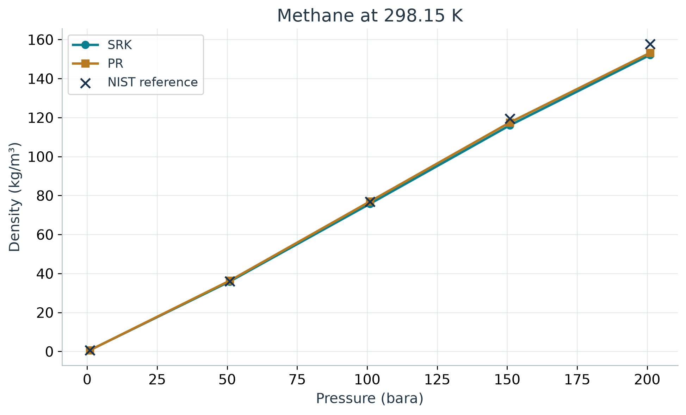
Observation. At 201 bara in Figure 9.2, NIST gives 157.79 kg/m3; SRK gives 152.03 kg/m3 and PR gives 153.15 kg/m3. Their deviations are -3.65% and -2.94%, respectively. The near-ideal low-pressure agreement therefore does not persist unchanged as density rises. For an application requiring tighter density accuracy, extend the validation over its operating envelope and consider a more suitable model or justified calibration.
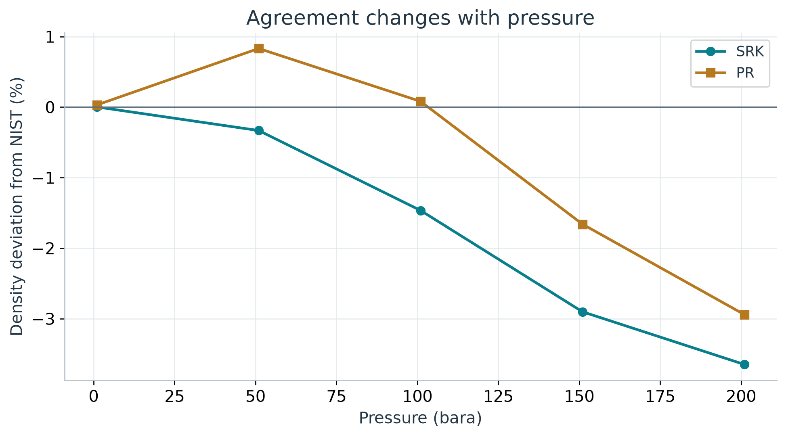
Observation. The deviation plot in Figure 9.3 makes differences visible that may be hard to see on a density plot. A model can reproduce the overall pressure trend while showing a systematic density bias. Select the model and any correction using the application's accuracy requirements and a broader relevant dataset, not the appearance of one smooth curve.
9.4 Use physical limits as a separate check
At sufficiently low density, the ideal-gas relationship gives a useful limiting estimate:
Use pressure in pascal, molar mass in kg/mol and $R$ in J/(mol K). A factor of one hundred thousand in a density error often points to a bar-to-pascal mistake. At elevated pressure, real-gas effects can be substantial and the ideal-gas equation is not a suitable high-accuracy reference.
The limiting estimate, comparison between EOS models, and NIST comparison answer different questions. Keep them as separate checks in the result record.
9.5 Mixtures require phase-aware interpretation
The running gas composition is 0.85 methane, 0.10 ethane and 0.05 propane on a mole-fraction basis. Its phase state can change with pressure and temperature. Before requesting a gas viscosity, confirm that a gas phase exists. Before reporting liquid density, confirm that a liquid phase is present and identify which one.
A phase envelope helps show the boundaries of a mixture's two-phase region. The dew branch relates to the appearance of liquid from gas; the bubble branch relates to the appearance of vapour from liquid. Cricondentherm and cricondenbar describe the maximum temperature and pressure of the two-phase envelope and need not coincide with the critical point.
The source workflow has a known branch-label caveat for calcPTphaseEnvelope(true, 1.0): getter names can be swapped relative to the physical dew and bubble branches. For an ordinary hydrocarbon envelope, the branch reaching the higher maximum temperature contains the cricondentherm and can help identify the dew side. Confirm the topology and physical state rather than applying that heuristic blindly to unusual envelopes.
Do not publish a phase-envelope drawing generated from arbitrary curves as a NeqSim result. This revision uses conceptual diagrams only where they are labelled as such and numerical plots only where their data can be traced to an execution.
9.6 Gas quality needs a reference basis
Calorific value and Wobbe index calculations require a complete gas composition and specified reference conditions. Gross and net calorific values differ in the treatment of combustion water. Volumetric values also depend on the reference temperature, pressure and compressibility convention. ISO 6976 provides the calculation framework. [39]
A software accessor can accept a unit string without performing the conversion the caller assumes. Inspect the implementation and returned unit before labelling a value as MJ per standard cubic metre. In particular, a value in kJ/m3 must be divided by one thousand before it is labelled MJ/m3. Record both the volume and combustion reference temperatures.
A calculated gas-quality value does not establish that the gas meets a sales contract. The contract's limits, reference conditions, sampling basis and composition uncertainty are separate inputs. Compare them explicitly rather than treating a method named after a standard as an automatic compliance certificate.
9.7 Water and associating components
A hydrocarbon gas with water, methanol or glycol may need a different model and additional interaction data. CPA is one candidate when association matters. Model selection should follow the physical question: water content, inhibitor partitioning, dew point and hydrate equilibrium are related but distinct calculations.
Document whether a composition is dry or wet and whether water is present as vapour, free liquid, or an imposed saturation condition. Adding a small water amount changes the normalised overall composition; it does not automatically create a specified aqueous phase or reproduce a measured water content.
Chapter 11 introduces an explicit wet-gas teaching variant and explains why a hydrate equilibrium temperature alone cannot establish operating safety.
9.8 Report what the calculation establishes
A property report should state the substance or composition, state, model, mixing rule, units, phase interpretation, reference source, comparison range and limitations. Where a result will influence equipment sizing or a contractual decision, identify the required accuracy and the relevant uncertainty.
For the methane example, the supported conclusion is limited to the observed agreement at the evaluated states. It does not validate an entire natural-gas process model, a wet-gas hydrate prediction, or petroleum-fluid characterisation.
Exercises
- Repeat the methane comparison at another temperature and explain whether the original conclusion still applies.
- Calculate the low-pressure ideal-gas estimate with coherent SI units and compare it with the EOS result.
- Describe the additional evidence needed to extend a pure-methane validation to the running gas mixture.
- Write a gas-quality output header that fully specifies energy and volume reference conditions.
- Explain how an incorrectly labelled phase-envelope branch could affect a dew-point assessment.
Process Simulation and Equipment Design
Learning Objectives
You should be able to construct the running gas process, specify a compressor calculation explicitly, check its outputs, interpret sensitivity and uncertainty, and distinguish process prediction from equipment qualification.
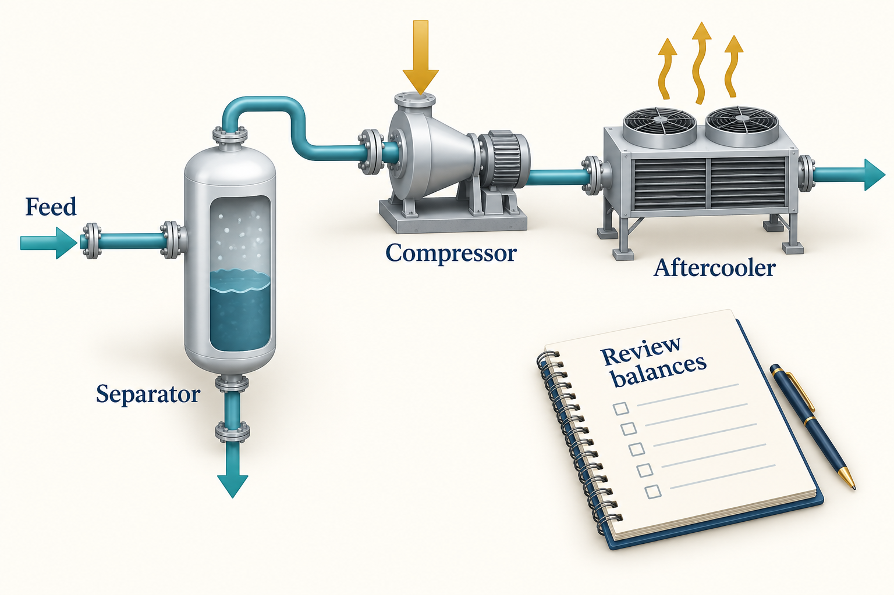
Observation. Figure 10.1 connects the chapter's main ideas. The bottom separator outlet and the energy arrows draw attention to the control-volume boundary. The depicted liquid is illustrative and does not predict a liquid inventory for the dry-gas case. The exact model schematic and balance table below define the calculation.
10.1 Define the flowsheet and its purpose
The teaching process contains a feed, an inlet separator, a compressor and an aftercooler. The inlet separator makes the phase boundary explicit before compression. The case estimates operating states and duty for the assumed gas and efficiency; it does not select a real compressor or specify its safe operating window.
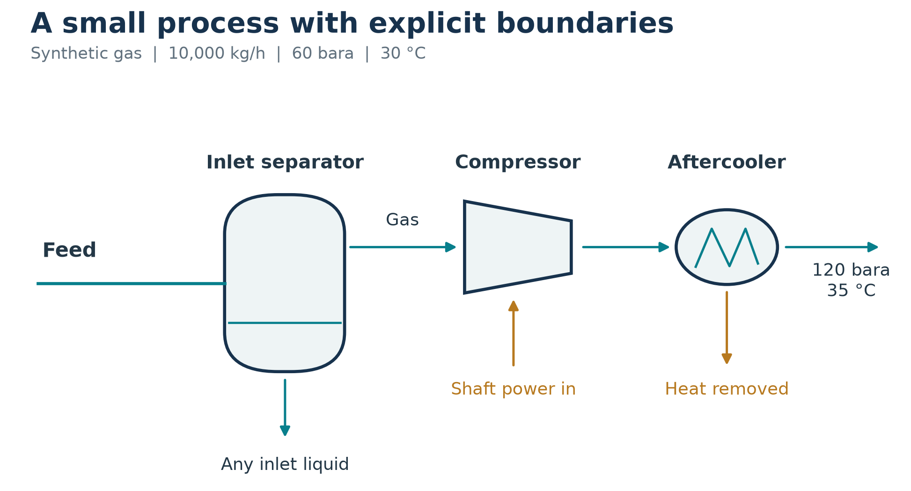
Observation. Follow both material outlets in Figure 10.2 from the separator when checking mass balance. Follow power into the compressor and heat removed by the cooler when defining the energy boundary. A stream disappearing from the drawing is often a stream missing from the calculation review.
10.2 Make the compressor specification explicit
The base case uses 10,000 kg/h at 60 bara and 303.15 K, with the Chapter 1 composition. The target pressure is 120 bara. Polytropic efficiency is assumed to be 0.75, and the aftercooler target is 308.15 K.
Stream = jneqsim.process.equipment.stream.Stream
Separator = jneqsim.process.equipment.separator.Separator
Compressor = jneqsim.process.equipment.compressor.Compressor
Cooler = jneqsim.process.equipment.heatexchanger.Cooler
ProcessSystem = jneqsim.process.processmodel.ProcessSystem
feed = Stream("Feed", fluid)
feed.setFlowRate(10000.0, "kg/hr")
separator = Separator("Inlet separator", feed)
compressor = Compressor("Compressor", separator.getGasOutStream())
compressor.setOutletPressure(120.0, "bara")
compressor.setUsePolytropicCalc(True)
compressor.setPolytropicEfficiency(0.75)
cooler = Cooler("Aftercooler", compressor.getOutletStream())
cooler.setOutTemperature(308.15)
process = ProcessSystem()
for unit in (feed, separator, compressor, cooler):
process.add(unit)
process.run()
This fragment continues from the running-case fluid construction in Chapter 6. Setting an efficiency and selecting the calculation mode are distinct operations; both are explicit here. The full executable case creates a fresh fluid and process for each run.
The model omits a vendor performance map, mechanical losses outside the selected compressor calculation, detailed driver selection, interconnecting pressure losses, anti-surge dynamics and a post-cooler liquid knockout vessel. These omissions define the scope. If the aftercooler produces liquid in a revised case, the downstream design must account for it.
10.3 Inspect the base result
| Output | Calculated value | Unit |
|---|---|---|
| Compressor power | 337.269 | kW |
| Discharge temperature | 93.749 | degrees C |
| Aftercooler temperature | 35.000 | degrees C |
| Aftercooler duty | -494.270 | kW |
| Separator gas flow | 10000.000 | kg/h |
| Separator liquid flow | 0.000 | kg/h |
The separator relative mass-balance residual is 0.00e+00. The numerical liquid outlet is negligible for this case. Values are model predictions for the declared synthetic basis.
Read the temperature and duty together. For a steady boundary around the complete train, neglecting kinetic and potential energy changes, heat and work entering the process are positive:
The material outlets are the aftercooler stream and the separator liquid stream. The verification computes each enthalpy rate as mass flow in kg/s times specific enthalpy in kJ/kg.
The inlet enthalpy rate is -32.521 kW; the cooled outlet carries -189.522 kW and the separate liquid outlet carries 0.000 kW on the same enthalpy reference. Thus the material-stream enthalpy change is -157.001 kW. Work into the process is +337.269 kW and heat into it is -494.270 kW. The unrounded balance residual is -5.68e-14 kW.
The cooling duty magnitude exceeds compressor power even though the final gas is 5 K warmer than the feed. For a dense real gas, enthalpy depends on pressure as well as temperature. The residual enthalpy change between 60 and 120 bara outweighs the sensible increase in this model. A constant-heat-capacity temperature comparison would miss that contribution. Absolute enthalpy values depend on the reference convention; the balance uses the same reference throughout. Closure checks the calculation's consistency, while independent data are still needed to assess its accuracy.
The separator mass-balance check compares feed mass flow with the sum of its gas and liquid outlets. It is a numerical consistency check. It does not validate carry-over, droplet capture, internals, or level control.
10.4 Build a physical estimate before trusting the result
For an ideal gas with constant heat-capacity ratio $k$, an isentropic temperature estimate is
Take $k=1.30$ as an illustrative constant, with $T_1=303.15$ K and $P_2/P_1=2$. Then $T_{2s}=303.15\times2^{0.30/1.30}=355.73$ K, or 82.58 degrees C. This estimates a temperature rise of about 53 K, compared with about 64 K in the calculated real-gas case. The assumed $k$ is a teaching input, not a fitted property of this mixture.
This estimate establishes the direction and scale of temperature change. The ideal-gas isentropic path and the selected real-gas polytropic calculation have different assumptions; their difference cannot be used as an independent accuracy benchmark. Real-gas properties, efficiency definitions, heat transfer and condensation can alter the result. [40]
At a fixed state path and efficiency, duty should scale approximately with mass flow. Increasing the required pressure ratio normally raises duty and discharge temperature. A contrary trend deserves investigation before it is presented as an optimisation result.
10.5 Change one input and re-run
The book varies discharge pressure from 80 to 160 bara with the other base inputs fixed.
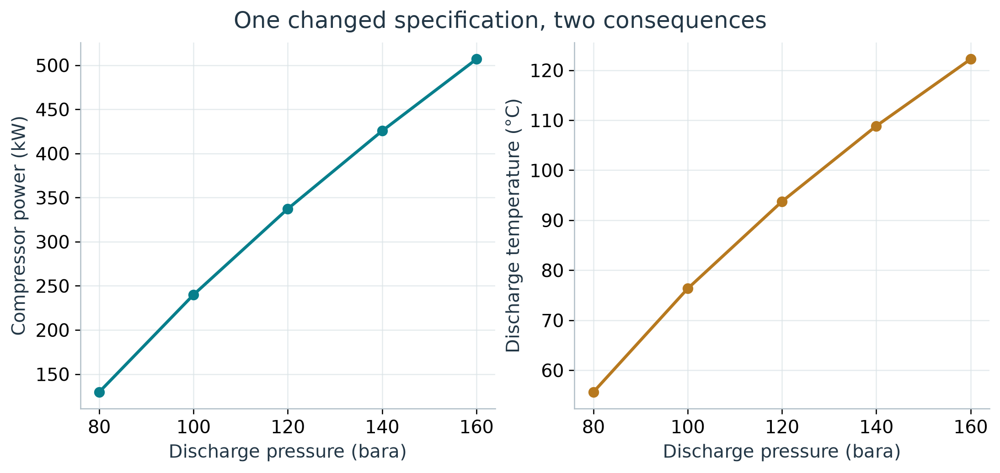
Observation. In Figure 10.3, increasing discharge pressure from 80 to 160 bara raises calculated duty from 129.6 to 506.8 kW and discharge temperature from 55.6 to 122.2 degrees C. The greater pressure ratio requires more work and raises the gas temperature. Check driver and temperature constraints before accepting a higher-pressure case; obtain vendor-map evidence before claiming an operating margin.
The comparison describes this selected operating model. It does not prove that a particular machine can reach all points. A real operating envelope also depends on speed, head, flow, power, discharge-temperature limits and vendor-defined margins.
Once the process exists, the automation facade can change an input using its address:
auto = process.getAutomation()
auto.getVariableList("Compressor")
auto.setVariableValue("Compressor.outletPressure", 130.0, "bara")
process.run()
new_pressure = auto.getVariableValue(
"Compressor.outletPressure", "bara"
)
The verification script checks a 120-to-130 bara change and preserves its result. Discovering a writable variable and applying the change do not establish that the new condition is acceptable.
10.6 Multi-stage compression is a different study
For idealised equal-efficiency stages with perfect intercooling and negligible interstage pressure losses, equal pressure ratios provide a useful initial allocation. For $N$ stages,
Real trains can depart from this allocation because of gas-property changes, cooling limits, liquid removal, pressure losses, machine maps and driver constraints. Include interstage separators where phase behaviour requires them and carry their liquid outlets into the material balance.
The running case uses mass flow throughout. If adapting a field-volume specification, establish the standard pressure, standard temperature, and dry or wet basis before converting the flow rate. Similar-looking standard-volume units can differ by orders of magnitude.
10.7 Uncertainty with full process runs
The teaching uncertainty calculation samples mass flow from a triangular distribution with low/base/high values of 9,000/10,000/11,000 kg/h and efficiency from 0.70/0.75/0.80. These are illustrative ranges, not measured distributions. They are sampled independently with a fixed random seed.
Every draw creates and runs the NeqSim process. The code collects failures explicitly and reports the number completed. No language-model call is required inside the loop.
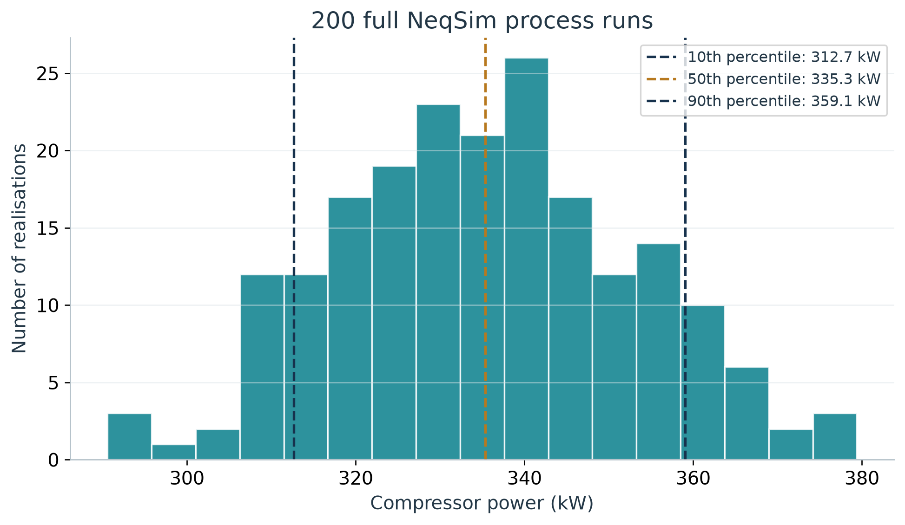
Observation. In the results plotted in Figure 10.4, all 200 requested cases completed. The non-exceedance 10th, 50th and 90th percentiles are 312.7, 335.3 and 359.1 kW. Higher flow and lower efficiency increase the required duty, broadening the distribution around the base result. Use this as a demonstration of uncertainty propagation, then replace the teaching ranges with justified application data and check statistical convergence.
The distribution describes only the included input assumptions. It omits composition uncertainty, model discrepancy, vendor-map uncertainty and input correlation. A fixed seed supports repeatability; it does not establish that the distributions represent a real installation. Repeat with larger sample sizes before relying on tail estimates.
10.8 Process calculations and mechanical design
A process model supplies flow rates, phase properties, duties and operating cases. Mechanical design also requires design pressure and temperature, materials, geometry, loads, corrosion allowance, applicable editions of design documents, and equipment-specific criteria.
For separators, physical dimensions and internals are configured through SeparatorMechanicalDesign. Gas-load factor, retention time, inlet devices, demister type and drainage assumptions affect the design model. A thermodynamic phase split alone does not establish separation performance.
The current source includes more explicit entrainment and carry-over models. Select a model appropriate to the available data and preserve its provenance. A tuning parameter or empirical constraint should not be described as a universal physical limit.
10.9 Preserve identity and revisions
Stable equipment names and connection metadata support review and later information exchange. Save the process state with a revision identifier and preserve the accepted basis, runtime record, and external data alongside it.
DEXPI export can transfer selected plant or process information. Choose the exchange profile for the receiving purpose and retain conformance evidence. A file that passes internal schema checks still needs qualification in the named recipient tool and accountable engineering review. Chapter 12 develops this route to industrial handover.
Exercises
- Add a declared pressure loss between the separator and compressor, then explain the effect on duty.
- Repeat the sensitivity calculation at another efficiency and compare the trends.
- Identify the additional inputs needed to turn the teaching calculation into a vendor compressor selection.
- Extend the material balance to a case with liquid leaving an interstage separator.
- Explain why the Monte Carlo distribution is conditional on its assumed inputs.
Flow Assurance and Pipeline Studies
Learning Objectives
You should be able to define a hydraulic case, separate thermal and hydraulic assumptions, inspect numerical refinement, and explain why hydrate equilibrium is only one part of flow-assurance assessment.
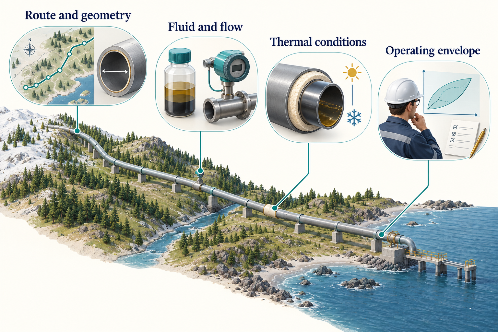
Observation. Figure 11.1 connects the chapter's main ideas. These input groups determine which questions a model can answer. The illustrated coastal route, insulation and envelope are conceptual. The numerical example below is deliberately horizontal and isothermal, so its pressure results do not predict cooldown or arrival temperature.
11.1 Specify the route and operating case
A pipeline model needs more than length and diameter. Establish the inlet state, composition, mass or volumetric flow basis, internal diameter, roughness, elevation profile, thermal boundary conditions and downstream constraints. Different combinations can produce similar outlet pressure while representing different physical systems.
The book begins with a deliberately simple case: the dry synthetic gas at 60 bara and 303.15 K, flowing at 10,000 kg/h through a horizontal 5,000 m pipe. Roughness is assumed to be 0.00001 m. Temperature is held constant to isolate the hydraulic comparison. The internal diameter is varied from 0.15 to 0.30 m.
This is a teaching calculation, not a design basis for a subsea line. In particular, an isothermal model cannot predict arrival temperature, cooldown time or insulation performance.
11.2 Understand the pressure balance
Pressure change along a pipe reflects friction, elevation and acceleration. For a horizontal, nearly constant-density single-phase estimate, Darcy-Weisbach gives
where $f_D$ is the Darcy friction factor, $L$ is length, $D$ is internal diameter, $\rho$ is density and $u$ is mean velocity. Gas density varies with pressure, so a segmented real-gas calculation is more appropriate as pressure change grows. Do not confuse Darcy and Fanning friction-factor definitions.
Beggs-Brill-type methods address multiphase pressure-drop and holdup relationships using empirical flow-regime correlations. Their applicability should be assessed for the actual geometry, fluid, operating range and flow behaviour. A steady-state result does not establish transient slug behaviour. [41]
11.3 Run a pipe model with explicit thermal mode
The source-snapshot API supports named heat-transfer modes. This pipe case starts with a fresh dry fluid at the original 60 bara and 303.15 K basis. It is a separate study from the compression train and does not take the compressor outlet as its inlet:
fluid = jneqsim.thermo.system.SystemSrkEos(303.15, 60.0)
for component, fraction in (("methane", 0.85), ("ethane", 0.10), ("propane", 0.05)):
fluid.addComponent(component, fraction)
fluid.setMixingRule("classic")
Pipe = jneqsim.process.equipment.pipeline.PipeBeggsAndBrills
feed = jneqsim.process.equipment.stream.Stream("Pipe feed", fluid)
feed.setFlowRate(10000.0, "kg/hr")
pipe = Pipe("Teaching pipe", feed)
pipe.setLength(5000.0)
pipe.setDiameter(0.20)
pipe.setElevation(0.0)
pipe.setPipeWallRoughness(1e-5)
pipe.setNumberOfIncrements(20)
pipe.setHeatTransferMode(Pipe.HeatTransferMode.ISOTHERMAL)
process = jneqsim.process.processmodel.ProcessSystem()
process.add(feed)
process.add(pipe)
process.run()
outlet_pressure = pipe.getOutletStream().getPressure("bara")
Lengths, diameter, elevation and roughness are in metres. A value such as 5.0 passed to setLength means five metres, not five kilometres. Use the explicit thermal mode instead of relying on a default whose interpretation may change between model versions.
For a non-isothermal case, specify the intended boundary: adiabatic, an overall heat-transfer coefficient, or a detailed resistance model where supported. Record ambient conditions and the basis for every thermal parameter.
11.4 Interpret the diameter sensitivity
| Internal diameter (m) | Outlet pressure (bara) | Pressure drop (bar) |
|---|---|---|
| 0.15 | 59.0295 | 0.9705 |
| 0.20 | 59.7723 | 0.2277 |
| 0.25 | 59.9249 | 0.0751 |
| 0.30 | 59.9695 | 0.0305 |
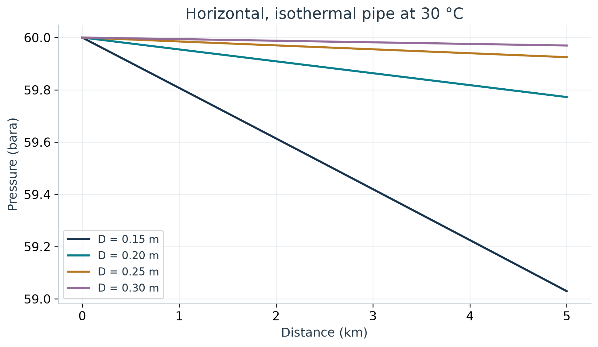
Observation. In Figure 11.2, increasing internal diameter from 0.15 to 0.30 m reduces the calculated pressure drop from 0.9705 to 0.0305 bar in this case. A larger flow area lowers velocity and frictional loss. The small losses also explain why the profiles are nearly linear. Use these results to understand hydraulic sensitivity, then introduce the actual route, thermal conditions and design constraints before selecting a diameter.
A lower pressure drop is one consideration in choosing diameter. Material cost, installation, turndown, liquid transport, pigging, erosion, vibration and mechanical requirements can favour a different choice. A hydraulic plot does not establish an optimum without the objective and constraints.
11.5 Check numerical refinement
The verification script repeats the 0.20 m case with 10, 20 and 40 increments. Compare the result as the discretisation is refined. A small change supports numerical consistency for this case, while a large change suggests further investigation.
| Increments | Pressure drop (bar) | Outlet temperature (degrees C) |
|---|---|---|
| 10 | 0.2277058 | 30.00 |
| 20 | 0.2277302 | 30.00 |
| 40 | 0.2277424 | 30.00 |
Grid refinement is not independent validation of the pressure-drop model. It addresses numerical sensitivity to the chosen segmentation. Experimental or field data with suitable uncertainty and operating-state information are needed to assess physical performance.
11.6 Introduce water explicitly
The dry-gas basis contains no water. The hydrate teaching variant adds 0.01 mol of water per 1.00 mol of the dry mixture, then applies the mixing rule after all components have been added. Its normalised water fraction is therefore approximately 0.00990. This is a declared synthetic input, not a measured water content or an inhibitor concentration.
wet = jneqsim.thermo.system.SystemSrkEos(283.15, 60.0)
for name, amount in [
("methane", 0.85), ("ethane", 0.10),
("propane", 0.05), ("water", 0.01)
]:
wet.addComponent(name, amount)
wet.setMixingRule("classic")
wet.setHydrateCheck(True)
ops = jneqsim.thermodynamicoperations.ThermodynamicOperations(wet)
ops.hydrateFormationTemperature()
This example demonstrates the available equilibrium operation. It does not establish that SRK with this water basis is the appropriate validated model for a real inhibitor system. For water/glycol/methanol partitioning, select and validate a suitable association model and mixture parameters.
11.7 Interpret a hydrate boundary
Hydrate formation depends on pressure, temperature, gas composition, water availability and inhibitor effects. An equilibrium boundary identifies where hydrate can be thermodynamically stable under the selected model. Formation rate, nucleation, transport, deposition and plugging require additional information and often different models. [42]
| Pressure (bara) | Calculated equilibrium temperature (degrees C) |
|---|---|
| 40 | 15.32 |
| 60 | 18.28 |
| 80 | 20.15 |
| 100 | 21.43 |
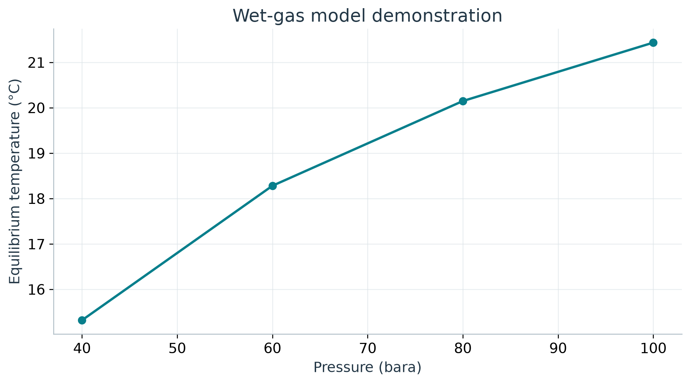
Observation. The calculated boundary in Figure 11.3 rises from 15.32 degrees C at 40 bara to 21.43 degrees C at 100 bara. This is consistent with pressure favouring hydrate stability over the selected range. The engineering implication is that a pressure change can alter the required thermal or inhibition strategy. Validate the selected wet-fluid model and establish water and inhibitor conditions before applying an operating-margin policy; this curve has not been independently validated.
If defining subcooling as $T_{hydrate}-T_{fluid}$, positive values indicate that the fluid is below the predicted equilibrium temperature. Other margin conventions reverse the sign. State the equation and sign rather than relying on the word margin.
A safe operating recommendation also needs the approved margin policy, operating transients, inhibitor availability and distribution, water production, restart procedure, measurement uncertainty and model validation. An equilibrium temperature alone cannot certify a pipeline as safe.
11.8 Extend the model by adding evidence
For a real route, use surveyed geometry or reviewed engineering data. PipingRouteBuilder can help construct serial pipe models from structured route inputs, but the route still needs origin, revision, unit checks and a review of missing segments.
For a subsea thermal study, preserve water depth, ambient temperature, insulation, burial or exposure assumptions, and time-dependent operating cases. For shutdown and restart, use transient methods suited to the physical problem. Do not infer cooldown from an isothermal steady-state pressure profile.
Wax, asphaltenes, corrosion, erosion, water hammer and flow-induced vibration have different input and validation requirements. A broad flow-assurance agent should route these questions to the relevant methods rather than treating them as extra outputs of one pipe calculation.
11.9 Keep hydraulic and mechanical conclusions distinct
A satisfactory arrival pressure does not establish wall thickness, collapse resistance, fatigue performance or material suitability. A mechanical design must use the applicable project code edition, design cases and loads. When comparing requirements, use the actual project documents; do not assume that a remembered standard designation or year is current.
The appropriate deliverable may be a screening conclusion with a list of required detailed checks. That is useful engineering work when its scope is clear.
Exercises
- Add an elevation change to the teaching pipe and compare its effect with friction.
- Explain why the isothermal model cannot support an arrival-temperature recommendation.
- Repeat the refinement study for a smaller diameter or higher flow. Decide whether additional increments are needed.
- Specify the additional evidence needed to turn the hydrate demonstration into an operating-margin study.
- Design a route-data handoff that preserves segment units, origin and uncertainty.
Part IV: Industrial Practice and Future Directions
From Teaching Cases to Industrial Studies
Learning Objectives
You should be able to plan the transition from a synthetic example to an asset study, identify the evidence needed for a digital-twin workflow, and distinguish information exchange from engineering acceptance.
12.1 Change the evidence before changing the claim
The worked examples demonstrate software use and calculation checks. An industrial study adds measured or approved data, application-specific validation, controlled assumptions, and accountable review. Replacing a generic equipment name with a field name does not perform that transition.
The industrial study patterns in this chapter apply to offshore and onshore facilities, including Norwegian Continental Shelf applications. Applying them to an operating asset requires its reviewed data and acceptance criteria. The teaching model demonstrates the method without representing a named installation or an approved project.
A field case can be added when its evidence and publication permission are available. Preserve the document revision, operating period, data quality, model basis, validation and review status. If some material cannot be published, explain the resulting reproducibility limit.
Start by resolving where the study and its evidence belong. NeqSim can create studies under a configured task root and search an optional document root. The document library may hold reference material used across many studies; each active study should preserve the selected files and their provenance in its own reference folders. This keeps a later change to the library from silently changing the evidence behind an issued result. [18]
12.2 A gas-compression performance study
An operating compressor study begins with more data than the Chapter 10 example. Gather composition, suction and discharge conditions, flow basis, speed, driver information, cooling conditions, recycle state, instrumentation uncertainty and the relevant vendor curves. Align measurement timestamps and identify stable operating periods.
A process specialist can build the flowsheet. A plant-data specialist can prepare the measurement dataset. A rotating-equipment reviewer can assess the machine representation and operating constraints. Their handoffs should preserve units, tag identities and the basis revision.
The comparison should distinguish shaft power, driver input power and electrical consumption. It should also identify whether the reported flow is net export, compressor inlet, or includes recycle. A discrepancy can arise from measurement basis rather than thermodynamic performance.
A useful result explains which differences the model can account for, what remains unresolved, and what data would discriminate between competing explanations. Tuning efficiency until one power value matches is insufficient evidence that the rest of the operating envelope is represented correctly.
12.3 A separator capacity study
A separator study may combine equilibrium phase rates with geometry, inlet conditions, internals, liquid properties, entrainment assumptions and operating levels. The process model supplies the fluid states and loads. The mechanical and performance models assess the selected equipment representation.
Keep the source of each constraint visible. A vendor-rated capacity, empirical carry-over relationship, company design rule and calculated physical limit are different kinds of evidence. The current NeqSim source provides more explicit ways to represent constraints and entrainment models, but their parameters still require justification.
Evaluate the relevant cases, including turndown and changed fluid composition where they matter. A vessel that passes one gas-load calculation can still have liquid-handling or drainage limitations. A thermodynamic separator's mass balance cannot validate those mechanisms.
12.4 A reservoir-to-facility study
A development or production study links resource assumptions, wells, a gathering network, processing capacity, export conditions and economics. Each link needs a compatible basis. Resource volume, composition, pressure, deliverability and facility constraints should not come from unrelated cases without a documented reconciliation.
NeqSim includes reservoir, well, pipeline and process components that can support integrated screening. The selected model's level of detail must match the decision. A simplified reservoir representation is not a replacement for a calibrated reservoir simulator when spatial behaviour or complex recovery mechanisms dominate.
Include resource uncertainty explicitly and report the percentile convention. Track GIP or STOIIP, recovery and total production separately. An economic-only parameter can reuse a technical profile only when it does not change the operating or investment decision within the model.
The agent's contribution is to maintain the chain of assumptions and evidence across disciplines. It should not make a screening model look more mature by generating a longer report.
12.5 Build a digital-twin loop in stages
A process model becomes part of a digital-twin workflow when it is connected to a physical system's data, identity, revision history and intended decisions. Begin with read-only comparison before considering more consequential actions.
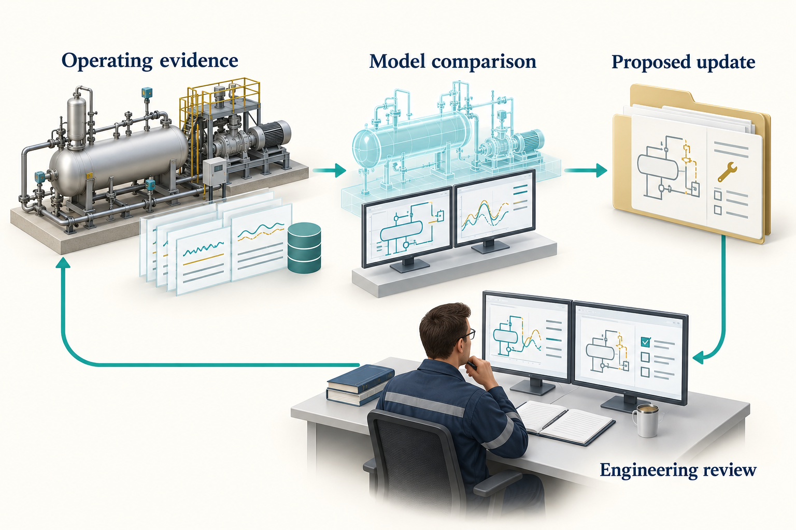
Observation. Figure 12.1 connects the chapter's main ideas. A discrepancy is investigated before a model revision is accepted. Check sensor quality, operating regime and competing physical causes; a smaller residual alone can conceal a wrong explanation. The return path represents controlled learning, not automatic actuation of a plant.
Online estimation and calibration classes in the source support parts of this workflow. Their existence does not make an unattended closed-loop system ready for an asset. Qualification depends on failure behaviour, uncertainty, change control and the consequences of the proposed action.
Useful initial applications include advisory performance monitoring and structured investigation of deviations. A model-generated recommendation should identify the supporting evidence and the person or process responsible for accepting it.
12.6 From a drawing to a model
A piping and instrumentation diagram (P&ID) can provide equipment tags, connectivity, nozzles and instrumentation. It usually does not contain enough information to run a complete process simulation. Composition, operating conditions, efficiencies, heat-transfer assumptions, control tuning and design-case definitions still need to be supplied.
Drawing extraction should preserve uncertainty. An optical character recognition (OCR) interpretation of a line number or valve symbol is a candidate observation, not an approved connection. Require a review of ambiguous tags, off-page references, equipment boundaries and missing segments.
The community technical-document-intelligence-agent makes this an explicit workflow. It inventories mixed document collections, chooses native extraction where useful, uses OCR for scanned or low-yield material, and calls for visual interpretation where layout, drawings or charts carry meaning. Its evidence records retain the source file, page or locator, original content, extraction method, units and review status. Conflicting observations remain visible for a downstream engineer to reconcile. The agent definition describes this work; extraction libraries, OCR and vision services must still be available in the execution environment. [43]
Finding a document is a separate step from interpreting it. neqsim documents "compressor" searches names and relative paths below the configured document root; it is not a full-text technical search or an automatic extraction run. The generated study configuration can record that root under inputs.document_root. Use the library as a read-only source and copy documents actually used into the study's per-source reference folders. Record the original location, revision and hash so an extracted pressure or tag can be traced back to its evidence. [18]
The current DEXPI workflow distinguishes different exchange purposes. A Plant model represents plant and instrumentation information; a Process model represents process steps, ports, streams and state quantities. Proteus-compatible and pyDEXPI-oriented paths support their own compatibility needs. Select the representation explicitly.
12.7 Qualify the handover
The canonical engineering graph and EngineeringDeliverableCompiler can connect model identity, cases, calculations, registers and exchange files. This is valuable because a changed basis can affect multiple deliverables at once. It also makes stale evidence easier to identify.
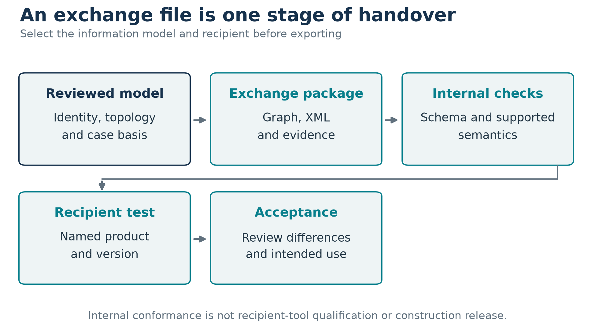
Observation. The internal checks in Figure 12.2 can establish schema validity, supported semantic mappings, identity consistency and structural round trips. They do not establish that a named commercial tool preserves all required information. Perform the recipient-tool import and export test with the actual product and version, then review the differences.
A DEXPI file, an information-handover package and a construction release serve different purposes. Generated safety-function attributes are configuration evidence; they do not establish safety integrity level (SIL) verification or permission to claim safeguard credit. The DEXPI engineering guide states these qualification boundaries. [13]
The report template is another part of the handover contract. NeqSim supports a selected Word report template through a command option, environment setting or saved default; a configured missing template should produce an error. Record which template and generator produced the issued report. Styling can preserve an organisation's familiar presentation, but approval status must come from the review record. A well-formatted report does not close unresolved assumptions or recipient-tool qualification. [44]
12.8 Organise an industrial pilot around a decision
Select a bounded use case with available data and a clear reviewer. Define the baseline workflow, expected outputs, validation cases, acceptable error, access limits and stopping conditions. Then compare the agent-assisted process with the baseline on the same task set.
| Pilot question | Evidence to retain |
|---|---|
| Did the workflow preserve the basis? | Input revisions and change records |
| Did calculations answer the question? | Model, cases and review findings |
| Were errors detected and reported? | Failed cases and recovery records |
| Was the result reproducible? | Runtime, source and data manifests |
| Was total effort reduced? | Comparable task timing and rework |
| Were information boundaries respected? | Access configuration and export review |
Avoid measuring only time to a first draft. Include the engineer's review effort and the work required to correct plausible errors. A narrow successful pilot is a better basis for expansion than a broad demonstration with unclear evidence.
12.9 Feed learning back into the repositories
An industrial pilot often reveals reusable improvements: a missing unit check, an unclear agent handoff, a stale API example, or a better result schema. Make public improvements plant-independent. Keep company policy and confidential details in enterprise content.
A change should include enough verification to show that it addresses the observed problem. Update the relevant skill and agent dependency or handoff if required. This creates a maintained engineering practice rather than a growing collection of one-off prompts.
Exercises
- List the evidence needed to convert the Chapter 10 example into an operating-compressor study.
- Design a read-only digital-twin pilot with a clear decision and failure policy.
- Explain how calibration could hide a sensor error and propose a check against that failure.
- Define an acceptance test for importing a DEXPI exchange into a named recipient tool.
- Separate the public and private outputs from a pilot that discovers a reusable API defect.
The Future of Agentic Engineering
Learning Objectives
You should be able to separate current capabilities from proposed developments, identify the evidence needed for greater autonomy, and plan improvements that increase engineering value without hiding uncertainty.
13.1 Begin with what is already observable
The preceding chapters show a practical foundation: an agent can use explicit skills and tools to prepare and execute NeqSim calculations, inspect outputs, preserve evidence, and help assemble a reviewable study. Current source interfaces support automation, saved state, engineering information exchange, and parts of calibration and supervision.
This foundation does not establish that general autonomous engineering is solved. The difficult questions concern incomplete data, model validity, conflicting requirements, long-running work, reliable handoffs and the consequences of an incorrect action. Progress should be measured against those questions.
The directions in this chapter are an engineering outlook as of September 2026. They are proposals and reasoned expectations, not a product roadmap or a timetable promised by the NeqSim maintainers. No percentage of a future vision is claimed to be complete.
The public community repository already provides a useful organisational foundation: discoverable workflow packages, declared skill dependencies and coordinator manifests. For example, a flow-assurance coordinator names the specialists needed to assemble a study. This makes the intended cooperation inspectable. Reliable execution of every handoff, compatibility across changing tools and successful industrial qualification must still be demonstrated for the chosen deployment. [20, 25]
13.2 From generated answers to maintained engineering records
A promising direction is to make the engineering record the central object of the workflow. The record would connect the accepted basis, component data, model revisions, operating cases, numerical results, reference comparisons, review findings and decisions.
Today, much of this information can be stored in files and linked through task artifacts. The canonical engineering graph and lifecycle functions provide building blocks for richer relationships. A future workflow could use these relationships to identify which conclusions become stale after a change.
Suppose the feed composition changes. The system should identify the fluid model, flash results, compressor duty, pipe hydraulics and downstream deliverables affected by that change. It should then re-run the relevant calculations and mark the previous review as applying to the previous basis. This would be more useful than regenerating every document without explaining why its contents changed.
The required evidence is concrete: reliable dependency tracking, stable identifiers, reproducible re-runs and checks that outdated conclusions are no longer presented as current.
13.3 Make autonomy specific to the action
Greater autonomy should be introduced by operation and consequence. Reading a public reference, preparing a calculation, issuing a controlled report and changing a plant setting require different evidence and authority.
Observation. Figure 13.1 connects the chapter's main ideas. The connected areas are a proposed way to organise capabilities, not a maturity scale or a promise of autonomous operation. Evidence, authority and controls must be appropriate to each action and its consequences.
For each operation, define what the agent may change, which data it may use, what must be checked, how failure is detected, and how the action can be stopped or reversed. Test those controls outside the prompt. Then evaluate the complete workflow on representative normal and abnormal cases.
13.4 Better evaluations will matter more than larger catalogs
A catalog can grow quickly. Demonstrating dependable behaviour is harder. Future evaluation suites should include tasks with incomplete compositions, ambiguous units, changing specifications, missing dependencies, conflicting documents and numerical failures.
The desired outcome is not always a numerical answer. In some cases, the correct result is a request for a missing basis, a rejected input, a limited screening conclusion, or a clear statement that the available model cannot support the decision.
Measure the rate and severity of consequential errors, the quality of uncertainty reporting, preservation of the basis, reproducibility and total review effort. Compare workflows using the same tasks and evidence. Retain failed cases so improvements can be tested against them.
Model evaluations should also examine changes over time. A new language-model version, skill revision, tool schema or numerical library can alter workflow behaviour. Pin what can be pinned and maintain regression tasks for what cannot. A recorded prompt alone is not a complete reproducibility strategy.
A useful next step would be a resolved dependency record that travels with each study: agent and skill revisions, executable packages, tool schemas, numerical-library revision and applicable verification cases. Current catalogs and export manifests supply some of these identities. The proposal is to connect them to study-level compatibility and regression evidence, including checks after a host changes how it discovers or loads skills.
13.5 Durable execution for long studies
Some studies require many simulations or long transient calculations. A useful future runtime should manage these as explicit jobs with checkpoints, resource limits, cancellation and durable outputs. The agent can prepare and supervise the work without remaining in a continuous interactive loop.
A checkpoint should capture the accepted basis, completed cases, failed cases, execution state and next action. Resuming a study should not require rereading an entire conversation or guessing which files are current. The runtime should prevent duplicate work and conflicting writes.
NeqSim task artifacts and supervised runners already support parts of this approach. Further work concerns reliable recovery across host restarts, distributed workers, changing credentials and interrupted external services. These are engineering problems in state and execution management, not simply reasons to increase a model's context window.
13.6 Learning systems need controlled change
A workflow can improve after a task exposes a mistake. The safe reusable output is usually a reviewed change to code, tests, a skill or an agent contract. Automatically modifying a skill after every surprising result would risk teaching the system to repeat an unverified conclusion.
A useful improvement loop is: preserve the failure, identify its cause, propose the smallest responsible change, run a relevant verification set, obtain the required review, and publish a versioned update. The next study then records that version.
This also supports organisational learning. A public method can improve without exposing the confidential case that revealed its weakness. Enterprise overlays can evolve independently while retaining their dependency on an approved public method.
13.7 Integrating multiple engineering engines
NeqSim does not cover every discipline or every physical mechanism. A broader engineering workflow may need reservoir simulation, structural analysis, geotechnical calculations, electrical-system models, optimisation services and document repositories.
Some public community definitions already describe cooperation with other engines. The catalog includes an olga-simulation-agent, and the flow-assurance coordinator names it among possible specialists. This is evidence of an integration workflow, not bundled access to commercial simulation software. The necessary engine, licence, model files and execution adapter remain deployment requirements. [20, 25]
The central challenge is semantic compatibility. A pressure field may represent absolute pressure in one tool and gauge pressure in another. A flow may be mass flow, in-situ volume or standard volume. A case identifier may refer to different operating assumptions. Passing JSON between tools does not resolve these differences.
Future integrations should make units, reference conditions, identities, assumptions and uncertainty part of the contract. Each tool should retain responsibility for the calculations it performs, and the combined workflow should be validated at the interfaces. Independent tools can still share data errors or model assumptions, so cross-tool agreement is not automatically independent validation.
13.8 Use surrogates where their error can be controlled
Reduced models and machine-learning surrogates may help with large parameter sweeps or optimisation. Their value depends on the domain over which they approximate the underlying calculations and on how error affects the engineering decision.
A useful surrogate workflow would define its training domain, use separate validation cases, detect extrapolation, report uncertainty or error bounds where justified, and return to the full physics model when necessary. The training data and NeqSim revision must be preserved.
A fast prediction outside the validated domain is not a successful optimisation. In safety-relevant or tightly constrained decisions, the candidate selected by a surrogate should be checked with the accepted full model and the applicable engineering review.
13.9 Digital twins should expose uncertainty
A future digital-twin workflow could combine measurements, model predictions and parameter estimation continuously. Its most useful output may be a structured explanation of disagreement: whether it is consistent with measurement uncertainty, a changed operating regime, model discrepancy or a developing equipment problem.
That requires observability and identifiability. If several uncertain parameters produce the same measured effect, a calibration routine cannot determine their true values from those measurements alone. More data, a different experiment, or a narrower claim may be needed.
A model should not update itself until every residual looks small. Preserve the pre-update discrepancy, parameter changes, constraints and rejected explanations. An unexplained improvement in fit can conceal an instrument fault or an unmodelled process change.
13.10 Evaluate cost across the whole workflow
Agentic engineering cost includes model calls, simulation compute, data preparation, integration maintenance and human review. A future system should optimise the total cost of a dependable result rather than only the price of a model request.
Many numerical workloads need no language-model calls inside their loops. The book's Monte Carlo example generates the method once and runs the full process in code for each draw. Caching and economic-only recalculation can reduce repeated work when their assumptions are valid.
Choose model capability and workflow complexity using measured task performance. A smaller model may be sufficient for a narrow, well-specified transformation. A more capable model may reduce investigation or review effort on a difficult task. Neither choice should be justified by a universal claim about all engineering work.
13.11 The engineer's role remains concrete
Engineers need to understand the physical system, define the decision, assess model suitability, identify missing evidence and judge the consequences of error. Agents change how some work is performed; they do not remove those responsibilities.
Education should therefore connect code execution with physical estimates, dimensional checks, reference comparisons and interpretation. Students should learn to investigate a result that looks plausible but answers the wrong question. They should also learn when a tool-assisted workflow can make their work more complete and repeatable.
For software practitioners, the corresponding skills are explicit contracts, controlled execution, provenance, evaluation and failure handling. The strongest systems connect those software practices to engineering methods and review processes.
13.12 A practical agenda
| Proposed improvement | Demonstration required |
|---|---|
| Automatic identification of stale conclusions | A changed basis invalidates the correct downstream evidence |
| Reliable long-running studies | Interrupted work resumes without lost or duplicated cases |
| Better specialist collaboration | Handoffs preserve units, assumptions and output ownership |
| Controlled skill improvement | A reviewed change prevents a recorded failure without regressions |
| Portable, resolved dependencies | A study identifies the exact packages and checks their compatibility after a host or library change |
| Broader tool integration | Interface quantities and cases remain semantically consistent |
| More useful digital twins | Updates distinguish model error, data error and operating change |
| Bounded operational actions | Validated limits, supervision and accountable acceptance work in practice |
These are testable directions. They make progress visible without promising that every engineering problem will become a five-minute report.
A useful next step for the reader is to choose one bounded problem, define its acceptance criteria, build the smallest adequate workflow, and retain the evidence. Improve that workflow based on observed failures and review effort. The result can become a maintained capability that another engineer can understand, repeat and extend.
Exercises
- Select one proposed improvement from the table and design an evaluation that could show whether it works.
- Define a bounded advisory workflow and explain why direct plant control is outside its scope.
- Describe how a composition change should invalidate downstream calculations and review records.
- Propose a surrogate-model use case with an explicit extrapolation and fallback policy.
- Design an engineering course exercise in which the most important outcome is detecting a plausible but incorrect result.
Glossary
Agent. A model operating in a host that can provide tools, context and execution.
Agent definition. A maintained role and workflow description with expected dependencies.
Agentic engineering. Engineering work in which an AI system can select and revise parts of a tool-using workflow.
Applicability. The conditions and purposes for which a method has a defensible basis.
Benchmark. A defined comparison with reference values or expected behaviour.
Calibration. Adjustment of selected model parameters to fit specified data.
Canonical source. The maintained source of truth for a package or engineering record.
Case. A particular combination of model, inputs and operating specifications.
CPA. Cubic-plus-association equation of state.
DEXPI. Engineering information exchange with distinct Plant and Process model purposes.
EOS. Equation of state, used to relate state variables and calculate properties.
Exceedance probability. Probability that a quantity is greater than a stated value.
Export. A generated representation for another host or information system.
Flash. An equilibrium calculation under a specified set of constraints.
GIP. Gas initially in place; its reference conditions must be stated.
Harness. Runtime support for execution, state, tools, supervision and policy.
Handoff. A transfer of responsibility with explicit inputs, outputs and unresolved issues.
Independent validation. Comparison with evidence independent of the model being assessed.
MCP. Model Context Protocol, connecting hosts and clients to servers and tools.
Monte Carlo. Repeated calculation with sampled uncertain inputs.
Non-exceedance quantile. Value below which a stated fraction of a distribution lies.
Phase. A physically distinct state or region represented in the fluid model.
PR. Peng-Robinson equation of state.
Provenance. The origin, revisions and transformations behind data or results.
PVT. Pressure-volume-temperature behaviour and related laboratory experiments.
Regression check. Comparison with an established software-behaviour baseline.
Screening. A bounded preliminary assessment with explicit assumptions and limits.
Skill. A reusable method or knowledge package loaded into an agent workflow.
SRK. Soave-Redlich-Kwong equation of state.
STOIIP. Stock-tank oil initially in place.
Tool contract. The callable operation's accepted inputs, outputs and behaviour.
Traceability. The ability to connect a claim to its basis, calculation and evidence.
Validation. Assessment of model performance for an intended application.
Verification. Assessment of implementation and execution against specified checks.
JVM / JAR. Java virtual machine / Java archive: the execution runtime and a package of Java classes and resources.
P&ID. Piping and instrumentation diagram: equipment, piping and instrumentation information, requiring additional data to create a complete simulation.
OCR. Optical character recognition: text extraction from an image; extracted engineering tags need review.
SIL. Safety integrity level: a classification associated with required safety-function performance; generated attributes alone do not verify a safety function.
Reproducibility and Source Snapshot
This revision uses NeqSim release 3.20.0 as its public baseline and source commit 9a95440e194a6fdc2890e4efafff647711beedce for source-level descriptions and executed examples. The latter is newer than the release tag. Preserve the distinction when reproducing an interface.
Rebuild the examples
Select one Python interpreter explicitly and set the NeqSim source root. Build that checkout before starting the Python process. From this book's directory, run:
<python-executable> verify_examples.py --project-root ABSOLUTE_NEQSIM_SOURCE_PATH
<python-executable> verify_cli_examples.py --project-root ABSOLUTE_NEQSIM_SOURCE_PATH
<python-executable> build_illustrations.py
<python-executable> build_notebooks.py --project-root ABSOLUTE_NEQSIM_SOURCE_PATH
<python-executable> verify_snippets.py --project-root ABSOLUTE_NEQSIM_SOURCE_PATH
<python-executable> build_book.py
The book runtime helper uses the selected interpreter and optionally reads publishing dependencies from the book-local revision_history/build_dependencies directory. It never substitutes an installed NeqSim package for the explicit source checkout. The numerical run records its interpreter, source commit and loaded Java code location in results.json.
The cover and one conceptual image per chapter were generated with the built-in image generator. The exact prompts, retained PNG masters, hashes and installation paths are recorded in illustrations/imagegen_manifest_2026-09-13.json. Notebook execution verifies and restores these retained images; it does not reproduce a stochastic image-generation call. Numerical plots continue to come from saved NeqSim outputs.
What was checked
The execution suite covers five methane states with SRK and PR, a matching NIST reference comparison, a base compression process, five discharge-pressure cases, automation input access, process-state save/load, the core flash runner, four pipe diameters, three numerical refinements, four wet-gas hydrate demonstrations, and 200 full-process Monte Carlo realisations.
The command-line checks execute the current dispatcher using temporary task defaults and fixture documents. They exercise the separate task, document and template settings; recursive filename discovery; intake/task creation; title-derived report generation; and work records. They preserve the real user settings. Installation and live AI-host interaction remain environment-dependent setup steps, rather than simulated confirmations of a human chat session.
The book-specific Java class neqsim.book.industrialagentic2026.BookWorkedExamplesRegressionTest checks selected methane, compressor, pipe and hydrate outputs against recorded constants. The companion notebooks compare against the frozen verification/regression_baseline_2026-09-12.json, which is separate from the refreshed results.json. A changed result therefore requires investigation rather than automatic replacement of its expected value. These checks preserve software behaviour; they are not independent physical validation.
The scientific traceability review connects numerical claims, figures and implemented equations to source methods, notebooks and recorded baselines. Teaching approximations are identified separately. Hidden @neqsim comments record these links in the manuscript; the current generic book checker does not itself verify Java assertion tolerances or automatically turn these comments into reader hyperlinks. The source table below and the companion audit records provide the navigation.
The NIST reference is a calculated reference-fluid dataset, not new experimental data. The raw tab-separated table, exact request URL and file digest are stored under references/nist. Duplicate rows at phase-label boundaries are matched by temperature and pressure, with consistency checked before use.
The pipe and hydrate examples are numerical demonstrations. They have not been independently validated for a real route or wet-fluid system. The local flash-runner test does not exercise a live MCP host or transport. State save/load verifies the saved JSON representation; it does not replay an entire external environment. No proprietary field case or vendor machine is qualified by these examples.
Source navigation
| Topic | Source location in the recorded NeqSim checkout |
|---|---|
| Thermodynamic models | src/main/java/neqsim/thermo/system/ |
| Flash operations | src/main/java/neqsim/thermodynamicoperations/ |
| Process variables | src/main/java/neqsim/process/automation/ |
| Process lifecycle | src/main/java/neqsim/process/processmodel/lifecycle/ |
| Energy networks | src/main/java/neqsim/process/equipment/energy/ |
| Route construction | src/main/java/neqsim/process/equipment/pipeline/routing/ |
| Engineering packages | src/main/java/neqsim/process/engineering/deliverables/ |
| DEXPI exchange | src/main/java/neqsim/process/processmodel/dexpi/ |
| MCP runners and contracts | src/main/java/neqsim/mcp/ |
| PVT experiments | src/main/java/neqsim/pvtsimulation/ |
| Core agent discovery | .github/agents/ |
| Core skill discovery | .github/skills/ |
| Community catalogs | community-agents.yaml, community-skills.yaml |
The full public source can be browsed at the recorded revision. The book's references/SOURCES.md provides a more detailed guide to the revision's sources.
Maintaining a later edition
Update the source snapshot and rerun the examples before changing verification dates. Check units and physical meaning as well as exceptions. Rebuild all output formats after changes to prose, figures or references. Preserve earlier sources and execution records when results change.
The original manuscript and assets are preserved in revision_history/original_before_2026-09-12_revision.zip. Legacy placeholder notebooks and unverified figures have been removed from active chapter directories and retained in the revision archive. The active figures and notebooks belong to this revision.
References
- Solbraa, "Agentic Engineering for Oil and Gas Facility Operations: Connecting Data, Tools and NeqSim in Engineering Workflows," 2026.
- NeqSim Contributors, "NeqSim 3.20.0 release and distribution assets," 2026. https://github.com/equinor/neqsim/releases/tag/v3.20.0
- Solbraa and NeqSim contributors, "NeqSim: Non-Equilibrium Simulator," 2026.
- Yao et al., "ReAct: Synergizing reasoning and acting in language models," International Conference on Learning Representations, 2023.
- Schluntz and Zhang, "Building effective agents," 2024. https://www.anthropic.com/engineering/building-effective-agents
- Soave, "Equilibrium constants from a modified Redlich-Kwong equation of state," Chemical Engineering Science, vol. 27, pp. 1197--1203, 1972. https://doi.org/10.1016/0009-2509(72)80096-4
- Peng and Robinson, "A new two-constant equation of state," Industrial & Engineering Chemistry Fundamentals, vol. 15, pp. 59--64, 1976. https://doi.org/10.1021/i160057a011
- Kontogeorgis et al., "An equation of state for associating fluids," Industrial & Engineering Chemistry Research, vol. 35, pp. 4310--4318, 1996. https://doi.org/10.1021/ie9600203
- Kunz and Wagner, "The GERG-2008 wide-range equation of state for natural gases and other mixtures: an expansion of GERG-2004," Journal of Chemical & Engineering Data, vol. 57, pp. 3032--3091, 2012. https://doi.org/10.1021/je300655b
- Rachford and Rice, "Procedure for use of electronic digital computers in calculating flash vaporization hydrocarbon equilibrium," Journal of Petroleum Technology, vol. 4, pp. 19--3, 1952. https://doi.org/10.2118/952327-g
- Michelsen, "The isothermal flash problem. Part I. Stability," Fluid Phase Equilibria, vol. 9, pp. 1--19, 1982. https://doi.org/10.1016/0378-3812(82)85001-2
- Michelsen, "The isothermal flash problem. Part II. Phase-split calculation," Fluid Phase Equilibria, vol. 9, pp. 21--40, 1982. https://doi.org/10.1016/0378-3812(82)85002-4
- NeqSim Contributors, "DEXPI Engineering Guide," 2026. https://equinor.github.io/neqsim/engineering/dexpi-guide.html
- NeqSim Contributors, "PVT Simulation Documentation and calibration workflow," 2026. https://equinor.github.io/neqsim/pvtsimulation/
- Anthropic, "Effective context engineering for AI agents," 2025. https://www.anthropic.com/engineering/effective-context-engineering-for-ai-agents
- OpenAI, "Codex customization overview," 2026. https://learn.chatgpt.com/docs/customization/overview
- OpenAI, "Build skills," 2026. https://learn.chatgpt.com/docs/build-skills
- NeqSim Contributors, "NeqSim task and document root resolution and study generation," 2026. https://github.com/equinor/neqsim/blob/9a95440e194a6fdc2890e4efafff647711beedce/devtools/new_task.py
- NeqSim Community, "NeqSim Community Agents repository and catalog," 2026. https://github.com/equinor/neqsim-community-agents
- NeqSim Community, "NeqSim Community Agents: Package catalog," 2026. https://github.com/equinor/neqsim-community-agents/blob/0ca1428a5dbd9425bace430c64a7b1bd6556b25d/community-agents.yaml
- NeqSim Contributors, "NeqSim agent installation, export and launch-guidance implementation," 2026. https://github.com/equinor/neqsim/blob/9a95440e194a6fdc2890e4efafff647711beedce/devtools/install_agent.py
- NeqSim Contributors, "PaperLab installation for VS Code," 2026. https://github.com/equinor/neqsim/blob/9a95440e194a6fdc2890e4efafff647711beedce/docs/integration/paperlab_vscode_install.md
- NeqSim Community, "Tie-in screening agent: Package manifest," 2026. https://github.com/equinor/neqsim-community-agents/blob/0ca1428a5dbd9425bace430c64a7b1bd6556b25d/agents/tie-in-screening-agent/agent.yaml
- Wooldridge, "An Introduction to MultiAgent Systems," 2009.
- NeqSim Community, "Flow assurance study agent: Coordinator manifest," 2026. https://github.com/equinor/neqsim-community-agents/blob/0ca1428a5dbd9425bace430c64a7b1bd6556b25d/agents/flow-assurance-study-agent/agent.yaml
- NeqSim Contributors, "Enterprise Agent and Skill Repositories," 2026. https://equinor.github.io/neqsim/integration/enterprise_agent_skill_repos.html
- Microsoft, "Custom agents in VS Code," 2026. https://code.visualstudio.com/docs/agent-customization/custom-agents
- GitHub, "About agent skills," 2026. https://docs.github.com/en/copilot/concepts/agents/about-agent-skills
- OpenAI, "Get started with ChatGPT Work," 2026. https://learn.chatgpt.com/docs/get-started-with-work
- OpenAI, "Projects and chats," 2026. https://learn.chatgpt.com/docs/projects
- OpenAI, "Skill controls," 2026. https://learn.chatgpt.com/docs/enterprise/skills
- Anthropic, "Extend Claude with skills," 2026. https://code.claude.com/docs/en/skills
- Anthropic, "Create custom subagents," 2026. https://code.claude.com/docs/en/sub-agents
- NeqSim Community, "NeqSim Community Skills repository and catalog," 2026. https://github.com/equinor/neqsim-community-skills
- International Organization for Standardization, "ISO 31000:2018: Risk management --- Guidelines," 2018.
- Model Context Protocol Contributors, "Model Context Protocol specification: Server tools," 2025. https://modelcontextprotocol.io/specification/2025-11-25/server/tools
- NeqSim Contributors, "MCP Core Layer: Runners, Models, and Catalogs," 2026. https://equinor.github.io/neqsim/integration/mcp_neqsim_core_layer.html
- National Institute of Standards and Technology, "NIST Chemistry WebBook SRD 69: Thermophysical Properties of Fluid Systems," 2026. https://webbook.nist.gov/chemistry/fluid/
- International Organization for Standardization, "ISO 6976:2016 Natural gas --- Calculation of calorific values, density, relative density and Wobbe indices from composition," 2016.
- Smith et al., "Introduction to Chemical Engineering Thermodynamics," 2005.
- Beggs and Brill, "A study of two-phase flow in inclined pipes," Journal of Petroleum Technology, vol. 25, pp. 607--617, 1973. https://doi.org/10.2118/4007-pa
- Sloan and Koh, "Clathrate Hydrates of Natural Gases," 2007. https://www.routledge.com/Clathrate-Hydrates-of-Natural-Gases/Koh-SloanJr/p/book/9780849390784
- NeqSim Community, "Technical document intelligence agent: Workflow definition," 2026. https://github.com/equinor/neqsim-community-agents/blob/0ca1428a5dbd9425bace430c64a7b1bd6556b25d/agents/technical-document-intelligence-agent/AGENT.md
- NeqSim Contributors, "NeqSim Task Solving Guide: Locations, templates and reporting," 2026. https://github.com/equinor/neqsim/blob/9a95440e194a6fdc2890e4efafff647711beedce/docs/development/TASK_SOLVING_GUIDE.md